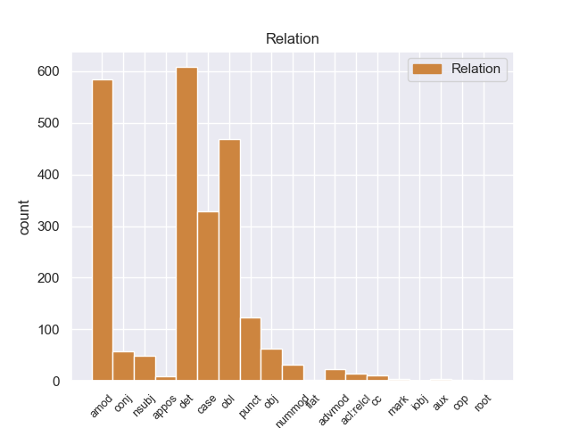
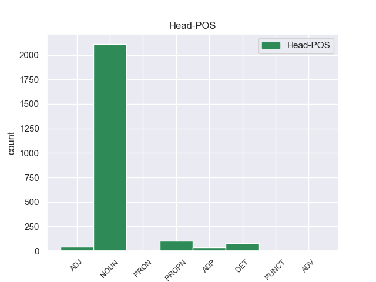
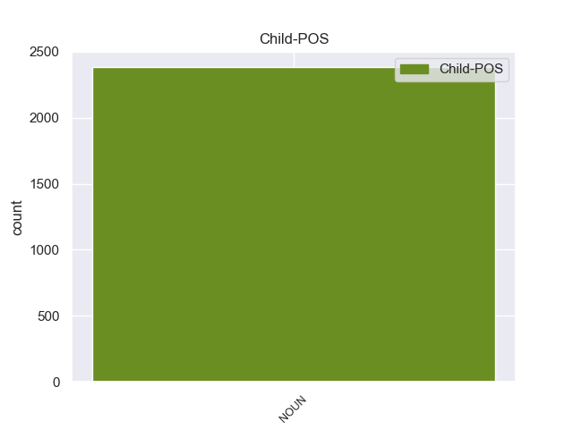

Distribution of features within this leaf



Agreement Rules sorted by frequency.
- When the dependent token is the determiner(det) of the head token, and the head token is NOUN and the dependent token is NOUN.
1 " _ _ _ _ 0 _ _ _
2 Tenemos _ _ _ _ 0 _ _ _
3 todo _ _ _ _ 0 _ _ _
4 listo _ _ _ _ 0 _ _ _
5 , _ _ _ _ 0 _ _ _
6 la _ _ _ _ 0 _ _ _
7 venta venta NOUN _ Gender=Masc|Number=Sing 68 det _ _
8 de _ _ _ _ 0 _ _ _
9 boletos _ _ _ _ 0 _ _ _
10 será _ _ _ _ 0 _ _ _
11 a _ _ _ _ 0 _ _ _
12 partir _ _ _ _ 0 _ _ _
13 de _ _ _ _ 0 _ _ _
14 mañana _ _ _ _ 0 _ _ _
15 de _ _ _ _ 0 _ _ _
16 8 _ _ _ _ 0 _ _ _
17 am _ _ _ _ 0 _ _ _
18 a _ _ _ _ 0 _ _ _
19 3 _ _ _ _ 0 _ _ _
20 pm _ _ _ _ 0 _ _ _
21 , _ _ _ _ 0 _ _ _
22 la _ _ _ _ 0 _ _ _
23 afición _ _ _ _ 0 _ _ _
24 de _ _ _ _ 0 _ _ _
25 el _ _ _ _ 0 _ _ _
26 Real _ _ _ _ 0 _ _ _
27 España _ _ _ _ 0 _ _ _
28 podrá _ _ _ _ 0 _ _ _
29 comprar _ _ _ _ 0 _ _ _
30 en _ _ _ _ 0 _ _ _
31 el _ _ _ _ 0 _ _ _
32 Banco _ _ _ _ 0 _ _ _
33 Continental _ _ _ _ 0 _ _ _
34 , _ _ _ _ 0 _ _ _
35 frente _ _ _ _ 0 _ _ _
36 a _ _ _ _ 0 _ _ _
37 el _ _ _ _ 0 _ _ _
38 estadio _ _ _ _ 0 _ _ _
39 Morazán _ _ _ _ 0 _ _ _
40 , _ _ _ _ 0 _ _ _
41 se _ _ _ _ 0 _ _ _
42 han _ _ _ _ 0 _ _ _
43 puesto _ _ _ _ 0 _ _ _
44 a _ _ _ _ 0 _ _ _
45 la _ _ _ _ 0 _ _ _
46 venta _ _ _ _ 0 _ _ _
47 800 _ _ _ _ 0 _ _ _
48 boletos _ _ _ _ 0 _ _ _
49 , _ _ _ _ 0 _ _ _
50 500 _ _ _ _ 0 _ _ _
51 en _ _ _ _ 0 _ _ _
52 sol _ _ _ _ 0 _ _ _
53 y _ _ _ _ 0 _ _ _
54 300 _ _ _ _ 0 _ _ _
55 en _ _ _ _ 0 _ _ _
56 preferencia _ _ _ _ 0 _ _ _
57 , _ _ _ _ 0 _ _ _
58 la _ _ _ _ 0 _ _ _
59 boletería _ _ _ _ 0 _ _ _
60 de _ _ _ _ 0 _ _ _
61 el _ _ _ _ 0 _ _ _
62 España _ _ _ _ 0 _ _ _
63 está _ _ _ _ 0 _ _ _
64 ya _ _ _ _ 0 _ _ _
65 identificada _ _ _ _ 0 _ _ _
66 con _ _ _ _ 0 _ _ _
67 el _ _ _ _ 0 _ _ _
68 escudo escudo NOUN _ Gender=Masc|Number=Sing 0 _ _ _
69 de _ _ _ _ 0 _ _ _
70 el _ _ _ _ 0 _ _ _
71 equipo _ _ _ _ 0 _ _ _
72 y _ _ _ _ 0 _ _ _
73 con _ _ _ _ 0 _ _ _
74 el _ _ _ _ 0 _ _ _
75 color _ _ _ _ 0 _ _ _
76 amarillo _ _ _ _ 0 _ _ _
77 " _ _ _ _ 0 _ _ _
78 , _ _ _ _ 0 _ _ _
79 comentó _ _ _ _ 0 _ _ _
80 Rolin _ _ _ _ 0 _ _ _
81 . _ _ _ _ 0 _ _ _
1 Esta _ _ _ _ 0 _ _ _
2 compra _ _ _ _ 0 _ _ _
3 pone _ _ _ _ 0 _ _ _
4 fin _ _ _ _ 0 _ _ _
5 a _ _ _ _ 0 _ _ _
6 meses _ _ _ _ 0 _ _ _
7 de _ _ _ _ 0 _ _ _
8 negociaciones _ _ _ _ 0 _ _ _
9 y _ _ _ _ 0 _ _ _
10 refuerza _ _ _ _ 0 _ _ _
11 la _ _ _ _ 0 _ _ _
12 estrategia _ _ _ _ 0 _ _ _
13 de _ _ _ _ 0 _ _ _
14 crecimiento _ _ _ _ 0 _ _ _
15 implantada _ _ _ _ 0 _ _ _
16 por _ _ _ _ 0 _ _ _
17 la _ _ _ _ 0 _ _ _
18 dirección _ _ _ _ 0 _ _ _
19 de _ _ _ _ 0 _ _ _
20 el _ _ _ _ 0 _ _ _
21 grupo _ _ _ _ 0 _ _ _
22 además _ _ _ _ 0 _ _ _
23 de _ _ _ _ 0 _ _ _
24 añadir _ _ _ _ 0 _ _ _
25 un _ _ _ _ 0 _ _ _
26 complejo complejo NOUN _ Gender=Masc|Number=Sing 0 _ _ _
27 de _ _ _ _ 0 _ _ _
28 calidad _ _ _ _ 0 _ _ _
29 superior _ _ _ _ 0 _ _ _
30 a _ _ _ _ 0 _ _ _
31 su _ _ _ _ 0 _ _ _
32 oferta oferta NOUN _ Gender=Masc|Number=Sing 26 amod _ _
33 . _ _ _ _ 0 _ _ _
1 " _ _ _ _ 0 _ _ _
2 Tenemos _ _ _ _ 0 _ _ _
3 todo _ _ _ _ 0 _ _ _
4 listo listo NOUN _ Gender=Masc|Number=Sing 7 obl _ _
5 , _ _ _ _ 0 _ _ _
6 la _ _ _ _ 0 _ _ _
7 venta venta NOUN _ Gender=Masc|Number=Sing 0 _ _ _
8 de _ _ _ _ 0 _ _ _
9 boletos _ _ _ _ 0 _ _ _
10 será _ _ _ _ 0 _ _ _
11 a _ _ _ _ 0 _ _ _
12 partir _ _ _ _ 0 _ _ _
13 de _ _ _ _ 0 _ _ _
14 mañana _ _ _ _ 0 _ _ _
15 de _ _ _ _ 0 _ _ _
16 8 _ _ _ _ 0 _ _ _
17 am _ _ _ _ 0 _ _ _
18 a _ _ _ _ 0 _ _ _
19 3 _ _ _ _ 0 _ _ _
20 pm _ _ _ _ 0 _ _ _
21 , _ _ _ _ 0 _ _ _
22 la _ _ _ _ 0 _ _ _
23 afición _ _ _ _ 0 _ _ _
24 de _ _ _ _ 0 _ _ _
25 el _ _ _ _ 0 _ _ _
26 Real _ _ _ _ 0 _ _ _
27 España _ _ _ _ 0 _ _ _
28 podrá _ _ _ _ 0 _ _ _
29 comprar _ _ _ _ 0 _ _ _
30 en _ _ _ _ 0 _ _ _
31 el _ _ _ _ 0 _ _ _
32 Banco _ _ _ _ 0 _ _ _
33 Continental _ _ _ _ 0 _ _ _
34 , _ _ _ _ 0 _ _ _
35 frente _ _ _ _ 0 _ _ _
36 a _ _ _ _ 0 _ _ _
37 el _ _ _ _ 0 _ _ _
38 estadio _ _ _ _ 0 _ _ _
39 Morazán _ _ _ _ 0 _ _ _
40 , _ _ _ _ 0 _ _ _
41 se _ _ _ _ 0 _ _ _
42 han _ _ _ _ 0 _ _ _
43 puesto _ _ _ _ 0 _ _ _
44 a _ _ _ _ 0 _ _ _
45 la _ _ _ _ 0 _ _ _
46 venta _ _ _ _ 0 _ _ _
47 800 _ _ _ _ 0 _ _ _
48 boletos _ _ _ _ 0 _ _ _
49 , _ _ _ _ 0 _ _ _
50 500 _ _ _ _ 0 _ _ _
51 en _ _ _ _ 0 _ _ _
52 sol _ _ _ _ 0 _ _ _
53 y _ _ _ _ 0 _ _ _
54 300 _ _ _ _ 0 _ _ _
55 en _ _ _ _ 0 _ _ _
56 preferencia _ _ _ _ 0 _ _ _
57 , _ _ _ _ 0 _ _ _
58 la _ _ _ _ 0 _ _ _
59 boletería _ _ _ _ 0 _ _ _
60 de _ _ _ _ 0 _ _ _
61 el _ _ _ _ 0 _ _ _
62 España _ _ _ _ 0 _ _ _
63 está _ _ _ _ 0 _ _ _
64 ya _ _ _ _ 0 _ _ _
65 identificada _ _ _ _ 0 _ _ _
66 con _ _ _ _ 0 _ _ _
67 el _ _ _ _ 0 _ _ _
68 escudo _ _ _ _ 0 _ _ _
69 de _ _ _ _ 0 _ _ _
70 el _ _ _ _ 0 _ _ _
71 equipo _ _ _ _ 0 _ _ _
72 y _ _ _ _ 0 _ _ _
73 con _ _ _ _ 0 _ _ _
74 el _ _ _ _ 0 _ _ _
75 color _ _ _ _ 0 _ _ _
76 amarillo _ _ _ _ 0 _ _ _
77 " _ _ _ _ 0 _ _ _
78 , _ _ _ _ 0 _ _ _
79 comentó _ _ _ _ 0 _ _ _
80 Rolin _ _ _ _ 0 _ _ _
81 . _ _ _ _ 0 _ _ _
1 " _ _ _ _ 0 _ _ _
2 Tenemos _ _ _ _ 0 _ _ _
3 todo _ _ _ _ 0 _ _ _
4 listo _ _ _ _ 0 _ _ _
5 , _ _ _ _ 0 _ _ _
6 la _ _ _ _ 0 _ _ _
7 venta venta NOUN _ Gender=Masc|Number=Sing 0 _ _ _
8 de _ _ _ _ 0 _ _ _
9 boletos _ _ _ _ 0 _ _ _
10 será _ _ _ _ 0 _ _ _
11 a _ _ _ _ 0 _ _ _
12 partir _ _ _ _ 0 _ _ _
13 de _ _ _ _ 0 _ _ _
14 mañana _ _ _ _ 0 _ _ _
15 de _ _ _ _ 0 _ _ _
16 8 _ _ _ _ 0 _ _ _
17 am _ _ _ _ 0 _ _ _
18 a _ _ _ _ 0 _ _ _
19 3 _ _ _ _ 0 _ _ _
20 pm _ _ _ _ 0 _ _ _
21 , _ _ _ _ 0 _ _ _
22 la _ _ _ _ 0 _ _ _
23 afición _ _ _ _ 0 _ _ _
24 de _ _ _ _ 0 _ _ _
25 el _ _ _ _ 0 _ _ _
26 Real _ _ _ _ 0 _ _ _
27 España _ _ _ _ 0 _ _ _
28 podrá _ _ _ _ 0 _ _ _
29 comprar _ _ _ _ 0 _ _ _
30 en _ _ _ _ 0 _ _ _
31 el _ _ _ _ 0 _ _ _
32 Banco _ _ _ _ 0 _ _ _
33 Continental _ _ _ _ 0 _ _ _
34 , _ _ _ _ 0 _ _ _
35 frente _ _ _ _ 0 _ _ _
36 a _ _ _ _ 0 _ _ _
37 el _ _ _ _ 0 _ _ _
38 estadio _ _ _ _ 0 _ _ _
39 Morazán _ _ _ _ 0 _ _ _
40 , _ _ _ _ 0 _ _ _
41 se _ _ _ _ 0 _ _ _
42 han _ _ _ _ 0 _ _ _
43 puesto _ _ _ _ 0 _ _ _
44 a _ _ _ _ 0 _ _ _
45 la _ _ _ _ 0 _ _ _
46 venta _ _ _ _ 0 _ _ _
47 800 _ _ _ _ 0 _ _ _
48 boletos _ _ _ _ 0 _ _ _
49 , _ _ _ _ 0 _ _ _
50 500 _ _ _ _ 0 _ _ _
51 en _ _ _ _ 0 _ _ _
52 sol _ _ _ _ 0 _ _ _
53 y _ _ _ _ 0 _ _ _
54 300 _ _ _ _ 0 _ _ _
55 en _ _ _ _ 0 _ _ _
56 preferencia _ _ _ _ 0 _ _ _
57 , _ _ _ _ 0 _ _ _
58 la _ _ _ _ 0 _ _ _
59 boletería _ _ _ _ 0 _ _ _
60 de _ _ _ _ 0 _ _ _
61 el _ _ _ _ 0 _ _ _
62 España _ _ _ _ 0 _ _ _
63 está _ _ _ _ 0 _ _ _
64 ya _ _ _ _ 0 _ _ _
65 identificada _ _ _ _ 0 _ _ _
66 con _ _ _ _ 0 _ _ _
67 el _ _ _ _ 0 _ _ _
68 escudo _ _ _ _ 0 _ _ _
69 de _ _ _ _ 0 _ _ _
70 el _ _ _ _ 0 _ _ _
71 equipo equipo NOUN _ Gender=Masc|Number=Sing 7 case _ _
72 y _ _ _ _ 0 _ _ _
73 con _ _ _ _ 0 _ _ _
74 el _ _ _ _ 0 _ _ _
75 color _ _ _ _ 0 _ _ _
76 amarillo _ _ _ _ 0 _ _ _
77 " _ _ _ _ 0 _ _ _
78 , _ _ _ _ 0 _ _ _
79 comentó _ _ _ _ 0 _ _ _
80 Rolin _ _ _ _ 0 _ _ _
81 . _ _ _ _ 0 _ _ _
1 La _ _ _ _ 0 _ _ _
2 revista revista NOUN _ Gender=Masc|Number=Sing 5 punct _ _
3 se _ _ _ _ 0 _ _ _
4 ha _ _ _ _ 0 _ _ _
5 publicado publicado NOUN _ Gender=Masc|Number=Sing 0 _ _ _
6 ininterrumpidamente _ _ _ _ 0 _ _ _
7 hasta _ _ _ _ 0 _ _ _
8 la _ _ _ _ 0 _ _ _
9 fecha _ _ _ _ 0 _ _ _
10 . _ _ _ _ 0 _ _ _
1 La _ _ _ _ 0 _ _ _
2 dirigente _ _ _ _ 0 _ _ _
3 socialdemócrata _ _ _ _ 0 _ _ _
4 dijo _ _ _ _ 0 _ _ _
5 que _ _ _ _ 0 _ _ _
6 su _ _ _ _ 0 _ _ _
7 partido _ _ _ _ 0 _ _ _
8 está _ _ _ _ 0 _ _ _
9 promoviendo _ _ _ _ 0 _ _ _
10 una _ _ _ _ 0 _ _ _
11 Ley _ _ _ _ 0 _ _ _
12 que _ _ _ _ 0 _ _ _
13 obligue _ _ _ _ 0 _ _ _
14 a _ _ _ _ 0 _ _ _
15 todas _ _ _ _ 0 _ _ _
16 las _ _ _ _ 0 _ _ _
17 instituciones _ _ _ _ 0 _ _ _
18 de _ _ _ _ 0 _ _ _
19 el _ _ _ _ 0 _ _ _
20 Estado _ _ _ _ 0 _ _ _
21 a _ _ _ _ 0 _ _ _
22 efectuar _ _ _ _ 0 _ _ _
23 sus _ _ _ _ 0 _ _ _
24 compras _ _ _ _ 0 _ _ _
25 de _ _ _ _ 0 _ _ _
26 manera _ _ _ _ 0 _ _ _
27 pública _ _ _ _ 0 _ _ _
28 por _ _ _ _ 0 _ _ _
29 internet _ _ _ _ 0 _ _ _
30 , _ _ _ _ 0 _ _ _
31 ya _ _ _ _ 0 _ _ _
32 que _ _ _ _ 0 _ _ _
33 en _ _ _ _ 0 _ _ _
34 la _ _ _ _ 0 _ _ _
35 actualidad _ _ _ _ 0 _ _ _
36 ello _ _ _ _ 0 _ _ _
37 es _ _ _ _ 0 _ _ _
38 posible _ _ _ _ 0 _ _ _
39 técnicamente _ _ _ _ 0 _ _ _
40 , _ _ _ _ 0 _ _ _
41 para _ _ _ _ 0 _ _ _
42 que _ _ _ _ 0 _ _ _
43 los _ _ _ _ 0 _ _ _
44 procesos _ _ _ _ 0 _ _ _
45 de _ _ _ _ 0 _ _ _
46 adquisición _ _ _ _ 0 _ _ _
47 se _ _ _ _ 0 _ _ _
48 realicen _ _ _ _ 0 _ _ _
49 a _ _ _ _ 0 _ _ _
50 la _ _ _ _ 0 _ _ _
51 vista _ _ _ _ 0 _ _ _
52 de _ _ _ _ 0 _ _ _
53 el _ _ _ _ 0 _ _ _
54 ciudadano _ _ _ _ 0 _ _ _
55 , _ _ _ _ 0 _ _ _
56 garantizando _ _ _ _ 0 _ _ _
57 así _ _ _ _ 0 _ _ _
58 su _ _ _ _ 0 _ _ _
59 transparencia _ _ _ _ 0 _ _ _
60 , _ _ _ _ 0 _ _ _
61 lo _ _ _ _ 0 _ _ _
62 que _ _ _ _ 0 _ _ _
63 permitirá _ _ _ _ 0 _ _ _
64 una _ _ _ _ 0 _ _ _
65 efectiva _ _ _ _ 0 _ _ _
66 contraloría _ _ _ _ 0 _ _ _
67 social _ _ _ _ 0 _ _ _
68 que _ _ _ _ 0 _ _ _
69 avale _ _ _ _ 0 _ _ _
70 la _ _ _ _ 0 _ _ _
71 honestidad _ _ _ _ 0 _ _ _
72 de _ _ _ _ 0 _ _ _
73 los _ _ _ _ 0 _ _ _
74 procesos _ _ _ _ 0 _ _ _
75 de _ _ _ _ 0 _ _ _
76 compras _ _ _ _ 0 _ _ _
77 a _ _ _ _ 0 _ _ _
78 el _ _ _ _ 0 _ _ _
79 evitar _ _ _ _ 0 _ _ _
80 la _ _ _ _ 0 _ _ _
81 intermediación _ _ _ _ 0 _ _ _
82 , _ _ _ _ 0 _ _ _
83 es _ _ _ _ 0 _ _ _
84 decir _ _ _ _ 0 _ _ _
85 , _ _ _ _ 0 _ _ _
86 el _ _ _ _ 0 _ _ _
87 encuentro encuentro NOUN _ Gender=Masc|Number=Sing 0 _ _ _
88 cara _ _ _ _ 0 _ _ _
89 a _ _ _ _ 0 _ _ _
90 cara cara NOUN _ Gender=Masc|Number=Sing 87 obj _ _
91 entre _ _ _ _ 0 _ _ _
92 el _ _ _ _ 0 _ _ _
93 vendedor _ _ _ _ 0 _ _ _
94 y _ _ _ _ 0 _ _ _
95 el _ _ _ _ 0 _ _ _
96 comprador _ _ _ _ 0 _ _ _
97 , _ _ _ _ 0 _ _ _
98 que _ _ _ _ 0 _ _ _
99 es _ _ _ _ 0 _ _ _
100 un _ _ _ _ 0 _ _ _
101 mecanismo _ _ _ _ 0 _ _ _
102 que _ _ _ _ 0 _ _ _
103 facilita _ _ _ _ 0 _ _ _
104 la _ _ _ _ 0 _ _ _
105 corrupción _ _ _ _ 0 _ _ _
106 a _ _ _ _ 0 _ _ _
107 el _ _ _ _ 0 _ _ _
108 poner _ _ _ _ 0 _ _ _
109 en _ _ _ _ 0 _ _ _
110 manos _ _ _ _ 0 _ _ _
111 de _ _ _ _ 0 _ _ _
112 algunos _ _ _ _ 0 _ _ _
113 funcionarios _ _ _ _ 0 _ _ _
114 inescrupulosos _ _ _ _ 0 _ _ _
115 el _ _ _ _ 0 _ _ _
116 poder _ _ _ _ 0 _ _ _
117 discrecional _ _ _ _ 0 _ _ _
118 de _ _ _ _ 0 _ _ _
119 adquirir _ _ _ _ 0 _ _ _
120 lo _ _ _ _ 0 _ _ _
121 bienes _ _ _ _ 0 _ _ _
122 y _ _ _ _ 0 _ _ _
123 servicios _ _ _ _ 0 _ _ _
124 que _ _ _ _ 0 _ _ _
125 los _ _ _ _ 0 _ _ _
126 organismos _ _ _ _ 0 _ _ _
127 públicos _ _ _ _ 0 _ _ _
128 requieren _ _ _ _ 0 _ _ _
129 . _ _ _ _ 0 _ _ _
1 Comienzan _ _ _ _ 0 _ _ _
2 serias _ _ _ _ 0 _ _ _
3 discusiones discusiones NOUN _ Gender=Masc|Number=Sing 0 _ _ _
4 con _ _ _ _ 0 _ _ _
5 Daniel _ _ _ _ 0 _ _ _
6 y _ _ _ _ 0 _ _ _
7 la _ _ _ _ 0 _ _ _
8 desgracia _ _ _ _ 0 _ _ _
9 no _ _ _ _ 0 _ _ _
10 se _ _ _ _ 0 _ _ _
11 hace _ _ _ _ 0 _ _ _
12 esperar _ _ _ _ 0 _ _ _
13 , _ _ _ _ 0 _ _ _
14 en _ _ _ _ 0 _ _ _
15 una _ _ _ _ 0 _ _ _
16 noche _ _ _ _ 0 _ _ _
17 Valeria _ _ _ _ 0 _ _ _
18 se _ _ _ _ 0 _ _ _
19 encierra _ _ _ _ 0 _ _ _
20 en _ _ _ _ 0 _ _ _
21 su _ _ _ _ 0 _ _ _
22 habitación _ _ _ _ 0 _ _ _
23 donde _ _ _ _ 0 _ _ _
24 Daniel _ _ _ _ 0 _ _ _
25 la _ _ _ _ 0 _ _ _
26 encuentra encuentra NOUN _ Gender=Masc|Number=Sing 3 conj _ _
27 inconsciente _ _ _ _ 0 _ _ _
28 por _ _ _ _ 0 _ _ _
29 lo _ _ _ _ 0 _ _ _
30 que _ _ _ _ 0 _ _ _
31 es _ _ _ _ 0 _ _ _
32 hospitalizada _ _ _ _ 0 _ _ _
33 de _ _ _ _ 0 _ _ _
34 nuevo _ _ _ _ 0 _ _ _
35 y _ _ _ _ 0 _ _ _
36 le _ _ _ _ 0 _ _ _
37 amputan _ _ _ _ 0 _ _ _
38 la _ _ _ _ 0 _ _ _
39 pierna _ _ _ _ 0 _ _ _
40 debido _ _ _ _ 0 _ _ _
41 a _ _ _ _ 0 _ _ _
42 que _ _ _ _ 0 _ _ _
43 se _ _ _ _ 0 _ _ _
44 le _ _ _ _ 0 _ _ _
45 desarrolló _ _ _ _ 0 _ _ _
46 una _ _ _ _ 0 _ _ _
47 gangrena _ _ _ _ 0 _ _ _
48 en _ _ _ _ 0 _ _ _
49 ella _ _ _ _ 0 _ _ _
50 , _ _ _ _ 0 _ _ _
51 tras _ _ _ _ 0 _ _ _
52 una _ _ _ _ 0 _ _ _
53 trombosis _ _ _ _ 0 _ _ _
54 generada _ _ _ _ 0 _ _ _
55 por _ _ _ _ 0 _ _ _
56 el _ _ _ _ 0 _ _ _
57 esfuerzo _ _ _ _ 0 _ _ _
58 de _ _ _ _ 0 _ _ _
59 Valeria _ _ _ _ 0 _ _ _
60 en _ _ _ _ 0 _ _ _
61 buscar _ _ _ _ 0 _ _ _
62 a _ _ _ _ 0 _ _ _
63 Richie _ _ _ _ 0 _ _ _
64 . _ _ _ _ 0 _ _ _
1 Saint _ _ _ _ 0 _ _ _
2 - _ _ _ _ 0 _ _ _
3 Hippolyte _ _ _ _ 0 _ _ _
4 ( _ _ _ _ 0 _ _ _
5 en _ _ _ _ 0 _ _ _
6 occitano _ _ _ _ 0 _ _ _
7 Sent _ _ _ _ 0 _ _ _
8 Ipòli _ _ _ _ 0 _ _ _
9 ) _ _ _ _ 0 _ _ _
10 es _ _ _ _ 0 _ _ _
11 una _ _ _ _ 0 _ _ _
12 población población PROPN _ Gender=Masc|Number=Sing 0 _ _ _
13 y _ _ _ _ 0 _ _ _
14 comuna _ _ _ _ 0 _ _ _
15 francesa _ _ _ _ 0 _ _ _
16 , _ _ _ _ 0 _ _ _
17 situada _ _ _ _ 0 _ _ _
18 en _ _ _ _ 0 _ _ _
19 la _ _ _ _ 0 _ _ _
20 región _ _ _ _ 0 _ _ _
21 de _ _ _ _ 0 _ _ _
22 Aquitania _ _ _ _ 0 _ _ _
23 , _ _ _ _ 0 _ _ _
24 departamento _ _ _ _ 0 _ _ _
25 de _ _ _ _ 0 _ _ _
26 Gironda _ _ _ _ 0 _ _ _
27 , _ _ _ _ 0 _ _ _
28 en _ _ _ _ 0 _ _ _
29 el _ _ _ _ 0 _ _ _
30 distrito distrito NOUN _ Gender=Masc|Number=Sing 12 det _ _
31 de _ _ _ _ 0 _ _ _
32 Libourne _ _ _ _ 0 _ _ _
33 y _ _ _ _ 0 _ _ _
34 cantón _ _ _ _ 0 _ _ _
35 de _ _ _ _ 0 _ _ _
36 Castillon _ _ _ _ 0 _ _ _
37 - _ _ _ _ 0 _ _ _
38 la _ _ _ _ 0 _ _ _
39 - _ _ _ _ 0 _ _ _
40 Bataille _ _ _ _ 0 _ _ _
41 . _ _ _ _ 0 _ _ _
1 Artemisia _ _ _ _ 0 _ _ _
2 californica _ _ _ _ 0 _ _ _
3 , _ _ _ _ 0 _ _ _
4 es _ _ _ _ 0 _ _ _
5 una _ _ _ _ 0 _ _ _
6 especie especie NOUN _ Number=Sing 8 nsubj _ _
7 de _ _ _ _ 0 _ _ _
8 planta planta NOUN _ Gender=Masc|Number=Sing 0 _ _ _
9 fanerógama _ _ _ _ 0 _ _ _
10 perteneciente _ _ _ _ 0 _ _ _
11 a _ _ _ _ 0 _ _ _
12 la _ _ _ _ 0 _ _ _
13 familia _ _ _ _ 0 _ _ _
14 Asteraceae _ _ _ _ 0 _ _ _
15 ; _ _ _ _ 0 _ _ _
1 Se _ _ _ _ 0 _ _ _
2 quedaron _ _ _ _ 0 _ _ _
3 fuera _ _ _ _ 0 _ _ _
4 de _ _ _ _ 0 _ _ _
5 la _ _ _ _ 0 _ _ _
6 ' _ _ _ _ 0 _ _ _
7 final _ _ _ _ 0 _ _ _
8 ' _ _ _ _ 0 _ _ _
9 la _ _ _ _ 0 _ _ _
10 atleta _ _ _ _ 0 _ _ _
11 palentina _ _ _ _ 0 _ _ _
12 Marta _ _ _ _ 0 _ _ _
13 Domínguez _ _ _ _ 0 _ _ _
14 , _ _ _ _ 0 _ _ _
15 el _ _ _ _ 0 _ _ _
16 ciclista _ _ _ _ 0 _ _ _
17 Óscar _ _ _ _ 0 _ _ _
18 Freire _ _ _ _ 0 _ _ _
19 , _ _ _ _ 0 _ _ _
20 la _ _ _ _ 0 _ _ _
21 regata _ _ _ _ 0 _ _ _
22 Oxford _ _ _ _ 0 _ _ _
23 - _ _ _ _ 0 _ _ _
24 Cambridge _ _ _ _ 0 _ _ _
25 , _ _ _ _ 0 _ _ _
26 así _ _ _ _ 0 _ _ _
27 como _ _ _ _ 0 _ _ _
28 el _ _ _ _ 0 _ _ _
29 exgolfista _ _ _ _ 0 _ _ _
30 Jack _ _ _ _ 0 _ _ _
31 Nicklaus _ _ _ _ 0 _ _ _
32 , _ _ _ _ 0 _ _ _
33 el _ _ _ _ 0 _ _ _
34 equipo equipo NOUN _ Gender=Masc|Number=Sing 0 _ _ _
35 español _ _ _ _ 0 _ _ _
36 de _ _ _ _ 0 _ _ _
37 Copa _ _ _ _ 0 _ _ _
38 Davis _ _ _ _ 0 _ _ _
39 o _ _ _ _ 0 _ _ _
40 el _ _ _ _ 0 _ _ _
41 surfista _ _ _ _ 0 _ _ _
42 estadounidense _ _ _ _ 0 _ _ _
43 Robert _ _ _ _ 0 _ _ _
44 Kelly kelly NOUN _ Gender=Fem|Number=Sing 34 nummod _ _
45 Slater _ _ _ _ 0 _ _ _
46 , _ _ _ _ 0 _ _ _
47 entre _ _ _ _ 0 _ _ _
48 otros _ _ _ _ 0 _ _ _
49 . _ _ _ _ 0 _ _ _
1 Antonio _ _ _ _ 0 _ _ _
2 Saca _ _ _ _ 0 _ _ _
3 , _ _ _ _ 0 _ _ _
4 también _ _ _ _ 0 _ _ _
5 popularmente _ _ _ _ 0 _ _ _
6 conocido conocido NOUN _ Gender=Masc|Number=Sing 33 amod _ _
7 como _ _ _ _ 0 _ _ _
8 " _ _ _ _ 0 _ _ _
9 Tony _ _ _ _ 0 _ _ _
10 Saca _ _ _ _ 0 _ _ _
11 " _ _ _ _ 0 _ _ _
12 , _ _ _ _ 0 _ _ _
13 nació _ _ _ _ 0 _ _ _
14 en _ _ _ _ 0 _ _ _
15 la _ _ _ _ 0 _ _ _
16 ciudad _ _ _ _ 0 _ _ _
17 de _ _ _ _ 0 _ _ _
18 Usulután _ _ _ _ 0 _ _ _
19 , _ _ _ _ 0 _ _ _
20 El _ _ _ _ 0 _ _ _
21 Salvador _ _ _ _ 0 _ _ _
22 , _ _ _ _ 0 _ _ _
23 el _ _ _ _ 0 _ _ _
24 9 _ _ _ _ 0 _ _ _
25 de _ _ _ _ 0 _ _ _
26 marzo _ _ _ _ 0 _ _ _
27 de _ _ _ _ 0 _ _ _
28 1965 _ _ _ _ 0 _ _ _
29 , _ _ _ _ 0 _ _ _
30 desciende _ _ _ _ 0 _ _ _
31 de _ _ _ _ 0 _ _ _
32 una _ _ _ _ 0 _ _ _
33 familia familia PROPN _ Gender=Fem|Number=Sing 0 _ _ _
34 palestina _ _ _ _ 0 _ _ _
35 católica _ _ _ _ 0 _ _ _
36 que _ _ _ _ 0 _ _ _
37 llegó _ _ _ _ 0 _ _ _
38 a _ _ _ _ 0 _ _ _
39 El _ _ _ _ 0 _ _ _
40 Salvador _ _ _ _ 0 _ _ _
41 a _ _ _ _ 0 _ _ _
42 principios _ _ _ _ 0 _ _ _
43 de _ _ _ _ 0 _ _ _
44 el _ _ _ _ 0 _ _ _
45 siglo _ _ _ _ 0 _ _ _
46 XX _ _ _ _ 0 _ _ _
47 . _ _ _ _ 0 _ _ _
1 Su _ _ _ _ 0 _ _ _
2 carrera carrera NOUN _ Gender=Masc|Number=Sing 8 det _ _
3 de _ _ _ _ 0 _ _ _
4 entrenador _ _ _ _ 0 _ _ _
5 comienza _ _ _ _ 0 _ _ _
6 en _ _ _ _ 0 _ _ _
7 el _ _ _ _ 0 _ _ _
8 año año DET _ Gender=Masc|Number=Sing 0 _ _ _
9 2008 _ _ _ _ 0 _ _ _
10 , _ _ _ _ 0 _ _ _
11 cuando _ _ _ _ 0 _ _ _
12 dirigía _ _ _ _ 0 _ _ _
13 a _ _ _ _ 0 _ _ _
14 el _ _ _ _ 0 _ _ _
15 club _ _ _ _ 0 _ _ _
16 Deportes _ _ _ _ 0 _ _ _
17 Naval _ _ _ _ 0 _ _ _
18 de _ _ _ _ 0 _ _ _
19 la _ _ _ _ 0 _ _ _
20 Tercera _ _ _ _ 0 _ _ _
21 División _ _ _ _ 0 _ _ _
22 de _ _ _ _ 0 _ _ _
23 el _ _ _ _ 0 _ _ _
24 fútbol _ _ _ _ 0 _ _ _
25 chileno _ _ _ _ 0 _ _ _
26 , _ _ _ _ 0 _ _ _
27 equipo _ _ _ _ 0 _ _ _
28 con _ _ _ _ 0 _ _ _
29 el _ _ _ _ 0 _ _ _
30 cual _ _ _ _ 0 _ _ _
31 logra _ _ _ _ 0 _ _ _
32 el _ _ _ _ 0 _ _ _
33 campeonato _ _ _ _ 0 _ _ _
34 de _ _ _ _ 0 _ _ _
35 la _ _ _ _ 0 _ _ _
36 categoría _ _ _ _ 0 _ _ _
37 y _ _ _ _ 0 _ _ _
38 asciende _ _ _ _ 0 _ _ _
39 a _ _ _ _ 0 _ _ _
40 Primera _ _ _ _ 0 _ _ _
41 B _ _ _ _ 0 _ _ _
42 , _ _ _ _ 0 _ _ _
43 y _ _ _ _ 0 _ _ _
44 el _ _ _ _ 0 _ _ _
45 que _ _ _ _ 0 _ _ _
46 a _ _ _ _ 0 _ _ _
47 el _ _ _ _ 0 _ _ _
48 que _ _ _ _ 0 _ _ _
49 abandonaría _ _ _ _ 0 _ _ _
50 después _ _ _ _ 0 _ _ _
51 por _ _ _ _ 0 _ _ _
52 los _ _ _ _ 0 _ _ _
53 malos _ _ _ _ 0 _ _ _
54 resultados _ _ _ _ 0 _ _ _
55 en _ _ _ _ 0 _ _ _
56 el _ _ _ _ 0 _ _ _
57 campeonato _ _ _ _ 0 _ _ _
58 profesional _ _ _ _ 0 _ _ _
59 de _ _ _ _ 0 _ _ _
60 el _ _ _ _ 0 _ _ _
61 siguiente _ _ _ _ 0 _ _ _
62 año _ _ _ _ 0 _ _ _
63 . _ _ _ _ 0 _ _ _
1 Primero _ _ _ _ 0 _ _ _
2 , _ _ _ _ 0 _ _ _
3 una _ _ _ _ 0 _ _ _
4 subida _ _ _ _ 0 _ _ _
5 moderada _ _ _ _ 0 _ _ _
6 en _ _ _ _ 0 _ _ _
7 el _ _ _ _ 0 _ _ _
8 precio _ _ _ _ 0 _ _ _
9 , _ _ _ _ 0 _ _ _
10 porque _ _ _ _ 0 _ _ _
11 los _ _ _ _ 0 _ _ _
12 ciudadanos _ _ _ _ 0 _ _ _
13 deben _ _ _ _ 0 _ _ _
14 saber _ _ _ _ 0 _ _ _
15 que _ _ _ _ 0 _ _ _
16 un _ _ _ _ 0 _ _ _
17 céntimo _ _ _ _ 0 _ _ _
18 en _ _ _ _ 0 _ _ _
19 el _ _ _ _ 0 _ _ _
20 precio _ _ _ _ 0 _ _ _
21 de _ _ _ _ 0 _ _ _
22 el _ _ _ _ 0 _ _ _
23 billete _ _ _ _ 0 _ _ _
24 significa _ _ _ _ 0 _ _ _
25 un _ _ _ _ 0 _ _ _
26 millón _ _ _ _ 0 _ _ _
27 de _ _ _ _ 0 _ _ _
28 euros _ _ _ _ 0 _ _ _
29 , _ _ _ _ 0 _ _ _
30 que _ _ _ _ 0 _ _ _
31 la _ _ _ _ 0 _ _ _
32 subvención _ _ _ _ 0 _ _ _
33 que _ _ _ _ 0 _ _ _
34 se _ _ _ _ 0 _ _ _
35 dedica _ _ _ _ 0 _ _ _
36 a _ _ _ _ 0 _ _ _
37 el _ _ _ _ 0 _ _ _
38 transporte _ _ _ _ 0 _ _ _
39 es _ _ _ _ 0 _ _ _
40 delirante _ _ _ _ 0 _ _ _
41 , _ _ _ _ 0 _ _ _
42 de _ _ _ _ 0 _ _ _
43 45 _ _ _ _ 0 _ _ _
44 millones _ _ _ _ 0 _ _ _
45 de _ _ _ _ 0 _ _ _
46 euros _ _ _ _ 0 _ _ _
47 a _ _ _ _ 0 _ _ _
48 el _ _ _ _ 0 _ _ _
49 año _ _ _ _ 0 _ _ _
50 , _ _ _ _ 0 _ _ _
51 y _ _ _ _ 0 _ _ _
52 que _ _ _ _ 0 _ _ _
53 la _ _ _ _ 0 _ _ _
54 ciudad _ _ _ _ 0 _ _ _
55 tiene _ _ _ _ 0 _ _ _
56 los _ _ _ _ 0 _ _ _
57 precios precios NOUN _ Gender=Masc|Number=Sing 0 _ _ _
58 más más NOUN _ Gender=Masc|Number=Sing 57 advmod _ _
59 baratos _ _ _ _ 0 _ _ _
60 de _ _ _ _ 0 _ _ _
61 las _ _ _ _ 0 _ _ _
62 ciudades _ _ _ _ 0 _ _ _
63 españolas _ _ _ _ 0 _ _ _
64 con _ _ _ _ 0 _ _ _
65 más _ _ _ _ 0 _ _ _
66 de _ _ _ _ 0 _ _ _
67 200.000 _ _ _ _ 0 _ _ _
68 habitantes _ _ _ _ 0 _ _ _
69 . _ _ _ _ 0 _ _ _
1 El _ _ _ _ 0 _ _ _
2 verano _ _ _ _ 0 _ _ _
3 cada _ _ _ _ 0 _ _ _
4 vez _ _ _ _ 0 _ _ _
5 se _ _ _ _ 0 _ _ _
6 va _ _ _ _ 0 _ _ _
7 quedando _ _ _ _ 0 _ _ _
8 más _ _ _ _ 0 _ _ _
9 y _ _ _ _ 0 _ _ _
10 más _ _ _ _ 0 _ _ _
11 lejos _ _ _ _ 0 _ _ _
12 , _ _ _ _ 0 _ _ _
13 el _ _ _ _ 0 _ _ _
14 frío _ _ _ _ 0 _ _ _
15 se _ _ _ _ 0 _ _ _
16 nos _ _ _ _ 0 _ _ _
17 ha _ _ _ _ 0 _ _ _
18 echado _ _ _ _ 0 _ _ _
19 encima _ _ _ _ 0 _ _ _
20 y _ _ _ _ 0 _ _ _
21 la _ _ _ _ 0 _ _ _
22 vuelta _ _ _ _ 0 _ _ _
23 a _ _ _ _ 0 _ _ _
24 la _ _ _ _ 0 _ _ _
25 rutina _ _ _ _ 0 _ _ _
26 es _ _ _ _ 0 _ _ _
27 un _ _ _ _ 0 _ _ _
28 hecho _ _ _ _ 0 _ _ _
29 pero _ _ _ _ 0 _ _ _
30 , _ _ _ _ 0 _ _ _
31 como _ _ _ _ 0 _ _ _
32 si _ _ _ _ 0 _ _ _
33 fuese _ _ _ _ 0 _ _ _
34 un _ _ _ _ 0 _ _ _
35 ilusorio _ _ _ _ 0 _ _ _
36 oasis _ _ _ _ 0 _ _ _
37 en _ _ _ _ 0 _ _ _
38 el _ _ _ _ 0 _ _ _
39 calendario _ _ _ _ 0 _ _ _
40 , _ _ _ _ 0 _ _ _
41 se _ _ _ _ 0 _ _ _
42 acerca acerca ADP _ Gender=Masc|Number=Sing 0 _ _ _
43 el _ _ _ _ 0 _ _ _
44 Puente puente NOUN _ Gender=Masc|Number=Sing 42 obl _ _
45 de _ _ _ _ 0 _ _ _
46 la _ _ _ _ 0 _ _ _
47 Constitución _ _ _ _ 0 _ _ _
48 , _ _ _ _ 0 _ _ _
49 ¡ _ _ _ _ 0 _ _ _
50 bendito _ _ _ _ 0 _ _ _
51 puente _ _ _ _ 0 _ _ _
52 ! _ _ _ _ 0 _ _ _
1 Epidendrum _ _ _ _ 0 _ _ _
2 denticulatum _ _ _ _ 0 _ _ _
3 fue _ _ _ _ 0 _ _ _
4 descrita _ _ _ _ 0 _ _ _
5 por _ _ _ _ 0 _ _ _
6 João _ _ _ _ 0 _ _ _
7 Barbosa _ _ _ _ 0 _ _ _
8 Rodrigues _ _ _ _ 0 _ _ _
9 y _ _ _ _ 0 _ _ _
10 publicado _ _ _ _ 0 _ _ _
11 en _ _ _ _ 0 _ _ _
12 Genera gener DET _ Gender=Masc|Number=Sing 0 _ _ _
13 et _ _ _ _ 0 _ _ _
14 Species _ _ _ _ 0 _ _ _
15 Orchidearum _ _ _ _ 0 _ _ _
16 Novarum novarum NOUN _ Gender=Masc|Number=Sing 12 amod _ _
17 2 _ _ _ _ 0 _ _ _
18 : _ _ _ _ 0 _ _ _
19 143 _ _ _ _ 0 _ _ _
20 . _ _ _ _ 0 _ _ _
1 Með _ _ _ _ 0 _ _ _
2 suð _ _ _ _ 0 _ _ _
3 í _ _ _ _ 0 _ _ _
4 eyrum _ _ _ _ 0 _ _ _
5 við _ _ _ _ 0 _ _ _
6 spilum _ _ _ _ 0 _ _ _
7 endalaust _ _ _ _ 0 _ _ _
8 ( _ _ _ _ 0 _ _ _
9 IPA _ _ _ _ 0 _ _ _
10 : _ _ _ _ 0 _ _ _
11 ) _ _ _ _ 0 _ _ _
12 , _ _ _ _ 0 _ _ _
13 ( _ _ _ _ 0 _ _ _
14 en _ _ _ _ 0 _ _ _
15 español _ _ _ _ 0 _ _ _
16 : _ _ _ _ 0 _ _ _
17 " _ _ _ _ 0 _ _ _
18 Con _ _ _ _ 0 _ _ _
19 un _ _ _ _ 0 _ _ _
20 zumbido _ _ _ _ 0 _ _ _
21 en _ _ _ _ 0 _ _ _
22 nuestros _ _ _ _ 0 _ _ _
23 oídos _ _ _ _ 0 _ _ _
24 tocamos _ _ _ _ 0 _ _ _
25 eternamente _ _ _ _ 0 _ _ _
26 " _ _ _ _ 0 _ _ _
27 ) _ _ _ _ 0 _ _ _
28 , _ _ _ _ 0 _ _ _
29 es _ _ _ _ 0 _ _ _
30 el _ _ _ _ 0 _ _ _
31 quinto _ _ _ _ 0 _ _ _
32 álbum _ _ _ _ 0 _ _ _
33 de _ _ _ _ 0 _ _ _
34 estudio _ _ _ _ 0 _ _ _
35 de _ _ _ _ 0 _ _ _
36 la _ _ _ _ 0 _ _ _
37 banda banda PROPN _ Gender=Masc|Number=Sing 0 _ _ _
38 islandesa _ _ _ _ 0 _ _ _
39 Sigur _ _ _ _ 0 _ _ _
40 Rós _ _ _ _ 0 _ _ _
41 , _ _ _ _ 0 _ _ _
42 lanzado lanzado NOUN _ Gender=Masc|Number=Sing 37 case _ _
43 el _ _ _ _ 0 _ _ _
44 23 _ _ _ _ 0 _ _ _
45 de _ _ _ _ 0 _ _ _
46 junio _ _ _ _ 0 _ _ _
47 de _ _ _ _ 0 _ _ _
48 2008 _ _ _ _ 0 _ _ _
49 . _ _ _ _ 0 _ _ _
1 El _ _ _ _ 0 _ _ _
2 Apostolado _ _ _ _ 0 _ _ _
3 de _ _ _ _ 0 _ _ _
4 la _ _ _ _ 0 _ _ _
5 prensa _ _ _ _ 0 _ _ _
6 contribuye _ _ _ _ 0 _ _ _
7 en _ _ _ _ 0 _ _ _
8 modo _ _ _ _ 0 _ _ _
9 eficaz _ _ _ _ 0 _ _ _
10 , _ _ _ _ 0 _ _ _
11 tanto _ _ _ _ 0 _ _ _
12 a _ _ _ _ 0 _ _ _
13 la _ _ _ _ 0 _ _ _
14 formación _ _ _ _ 0 _ _ _
15 de _ _ _ _ 0 _ _ _
16 la _ _ _ _ 0 _ _ _
17 conciencia _ _ _ _ 0 _ _ _
18 misionera _ _ _ _ 0 _ _ _
19 como _ _ _ _ 0 _ _ _
20 a _ _ _ _ 0 _ _ _
21 la _ _ _ _ 0 _ _ _
22 promoción _ _ _ _ 0 _ _ _
23 de _ _ _ _ 0 _ _ _
24 las _ _ _ _ 0 _ _ _
25 vocaciones _ _ _ _ 0 _ _ _
26 , _ _ _ _ 0 _ _ _
27 aportando _ _ _ _ 0 _ _ _
28 también _ _ _ _ 0 _ _ _
29 la _ _ _ _ 0 _ _ _
30 base base DET _ Gender=Masc|Number=Sing 0 _ _ _
31 material _ _ _ _ 0 _ _ _
32 para _ _ _ _ 0 _ _ _
33 la _ _ _ _ 0 _ _ _
34 rápida _ _ _ _ 0 _ _ _
35 extensión _ _ _ _ 0 _ _ _
36 de _ _ _ _ 0 _ _ _
37 la _ _ _ _ 0 _ _ _
38 obra obra NOUN _ Gender=Masc|Number=Sing 30 case _ _
39 misionera _ _ _ _ 0 _ _ _
40 de _ _ _ _ 0 _ _ _
41 Arnoldo _ _ _ _ 0 _ _ _
42 Janssen _ _ _ _ 0 _ _ _
43 . _ _ _ _ 0 _ _ _
1 Para _ _ _ _ 0 _ _ _
2 la _ _ _ _ 0 _ _ _
3 temporada temporada DET _ Gender=Masc|Number=Sing 0 _ _ _
4 , _ _ _ _ 0 _ _ _
5 McLaren _ _ _ _ 0 _ _ _
6 contaba _ _ _ _ 0 _ _ _
7 con _ _ _ _ 0 _ _ _
8 los _ _ _ _ 0 _ _ _
9 mismos _ _ _ _ 0 _ _ _
10 pilotos _ _ _ _ 0 _ _ _
11 de _ _ _ _ 0 _ _ _
12 la _ _ _ _ 0 _ _ _
13 temporada _ _ _ _ 0 _ _ _
14 pasada _ _ _ _ 0 _ _ _
15 , _ _ _ _ 0 _ _ _
16 el _ _ _ _ 0 _ _ _
17 nuevo _ _ _ _ 0 _ _ _
18 monoplaza _ _ _ _ 0 _ _ _
19 el _ _ _ _ 0 _ _ _
20 MP4 mp4 NOUN _ Gender=Masc|Number=Sing 3 obl _ _
21 - _ _ _ _ 0 _ _ _
22 26 _ _ _ _ 0 _ _ _
23 se _ _ _ _ 0 _ _ _
24 mostraba _ _ _ _ 0 _ _ _
25 como _ _ _ _ 0 _ _ _
26 un _ _ _ _ 0 _ _ _
27 mono _ _ _ _ 0 _ _ _
28 plaza _ _ _ _ 0 _ _ _
29 confiable _ _ _ _ 0 _ _ _
30 , _ _ _ _ 0 _ _ _
31 a _ _ _ _ 0 _ _ _
32 pesar _ _ _ _ 0 _ _ _
33 de _ _ _ _ 0 _ _ _
34 que _ _ _ _ 0 _ _ _
35 en _ _ _ _ 0 _ _ _
36 la _ _ _ _ 0 _ _ _
37 pre _ _ _ _ 0 _ _ _
38 - _ _ _ _ 0 _ _ _
39 temporada _ _ _ _ 0 _ _ _
40 solo _ _ _ _ 0 _ _ _
41 figuraba _ _ _ _ 0 _ _ _
42 , _ _ _ _ 0 _ _ _
43 la _ _ _ _ 0 _ _ _
44 mayoría _ _ _ _ 0 _ _ _
45 de _ _ _ _ 0 _ _ _
46 las _ _ _ _ 0 _ _ _
47 veces _ _ _ _ 0 _ _ _
48 entre _ _ _ _ 0 _ _ _
49 el _ _ _ _ 0 _ _ _
50 tercer _ _ _ _ 0 _ _ _
51 y _ _ _ _ 0 _ _ _
52 quinto _ _ _ _ 0 _ _ _
53 sitio _ _ _ _ 0 _ _ _
54 . _ _ _ _ 0 _ _ _
1 Secuestrando _ _ _ _ 0 _ _ _
2 a _ _ _ _ 0 _ _ _
3 Wyat _ _ _ _ 0 _ _ _
4 Wingfoot _ _ _ _ 0 _ _ _
5 por _ _ _ _ 0 _ _ _
6 un _ _ _ _ 0 _ _ _
7 tesoro tesoro NOUN _ Gender=Masc|Number=Sing 18 acl:relcl _ _
8 que _ _ _ _ 0 _ _ _
9 se _ _ _ _ 0 _ _ _
10 decía _ _ _ _ 0 _ _ _
11 que _ _ _ _ 0 _ _ _
12 ocultaba _ _ _ _ 0 _ _ _
13 su _ _ _ _ 0 _ _ _
14 pueblo _ _ _ _ 0 _ _ _
15 , _ _ _ _ 0 _ _ _
16 atrajeron _ _ _ _ 0 _ _ _
17 la _ _ _ _ 0 _ _ _
18 atención atención NOUN _ Gender=Masc|Number=Sing 0 _ _ _
19 de _ _ _ _ 0 _ _ _
20 los _ _ _ _ 0 _ _ _
21 4 _ _ _ _ 0 _ _ _
22 Terribles _ _ _ _ 0 _ _ _
23 . _ _ _ _ 0 _ _ _
1 Tras _ _ _ _ 0 _ _ _
2 la _ _ _ _ 0 _ _ _
3 llegada llegada NOUN _ Gender=Masc|Number=Sing 9 obl _ _
4 de _ _ _ _ 0 _ _ _
5 los _ _ _ _ 0 _ _ _
6 europeos _ _ _ _ 0 _ _ _
7 esta _ _ _ _ 0 _ _ _
8 se _ _ _ _ 0 _ _ _
9 redujo redujo ADJ _ Gender=Masc|Number=Sing 0 _ _ _
10 drásticamente _ _ _ _ 0 _ _ _
11 . _ _ _ _ 0 _ _ _
1 La _ _ _ _ 0 _ _ _
2 década _ _ _ _ 0 _ _ _
3 de _ _ _ _ 0 _ _ _
4 el _ _ _ _ 0 _ _ _
5 '90 _ _ _ _ 0 _ _ _
6 anunció _ _ _ _ 0 _ _ _
7 la _ _ _ _ 0 _ _ _
8 llegada _ _ _ _ 0 _ _ _
9 de _ _ _ _ 0 _ _ _
10 una _ _ _ _ 0 _ _ _
11 nueva _ _ _ _ 0 _ _ _
12 generación _ _ _ _ 0 _ _ _
13 de _ _ _ _ 0 _ _ _
14 hockey _ _ _ _ 0 _ _ _
15 que _ _ _ _ 0 _ _ _
16 maduraría _ _ _ _ 0 _ _ _
17 a _ _ _ _ 0 _ _ _
18 partir _ _ _ _ 0 _ _ _
19 de _ _ _ _ 0 _ _ _
20 el _ _ _ _ 0 _ _ _
21 año _ _ _ _ 0 _ _ _
22 2000 _ _ _ _ 0 _ _ _
23 con _ _ _ _ 0 _ _ _
24 el _ _ _ _ 0 _ _ _
25 surgimiento _ _ _ _ 0 _ _ _
26 de _ _ _ _ 0 _ _ _
27 Las _ _ _ _ 0 _ _ _
28 Leonas _ _ _ _ 0 _ _ _
29 como _ _ _ _ 0 _ _ _
30 una _ _ _ _ 0 _ _ _
31 de _ _ _ _ 0 _ _ _
32 las _ _ _ _ 0 _ _ _
33 potencias potencias ADJ _ Gender=Fem|Number=Sing 0 _ _ _
34 de _ _ _ _ 0 _ _ _
35 el _ _ _ _ 0 _ _ _
36 hockey hockey NOUN _ Gender=Masc|Number=Sing 33 amod _ _
37 femenino _ _ _ _ 0 _ _ _
38 mundial _ _ _ _ 0 _ _ _
39 . _ _ _ _ 0 _ _ _
1 Los _ _ _ _ 0 _ _ _
2 chicos _ _ _ _ 0 _ _ _
3 festejan _ _ _ _ 0 _ _ _
4 el _ _ _ _ 0 _ _ _
5 Día día NOUN _ Gender=Masc|Number=Sing 19 obl _ _
6 de _ _ _ _ 0 _ _ _
7 los _ _ _ _ 0 _ _ _
8 Inocentes _ _ _ _ 0 _ _ _
9 , _ _ _ _ 0 _ _ _
10 después _ _ _ _ 0 _ _ _
11 conocen _ _ _ _ 0 _ _ _
12 a _ _ _ _ 0 _ _ _
13 la _ _ _ _ 0 _ _ _
14 sensación _ _ _ _ 0 _ _ _
15 de _ _ _ _ 0 _ _ _
16 el _ _ _ _ 0 _ _ _
17 momento _ _ _ _ 0 _ _ _
18 One _ _ _ _ 0 _ _ _
19 Direction edirecti PROPN _ Number=Sing 0 _ _ _
20 , _ _ _ _ 0 _ _ _
21 Gibby _ _ _ _ 0 _ _ _
22 abre _ _ _ _ 0 _ _ _
23 su _ _ _ _ 0 _ _ _
24 propio _ _ _ _ 0 _ _ _
25 restaurante _ _ _ _ 0 _ _ _
26 , _ _ _ _ 0 _ _ _
27 Nevel _ _ _ _ 0 _ _ _
28 regresa _ _ _ _ 0 _ _ _
29 a _ _ _ _ 0 _ _ _
30 iCarly _ _ _ _ 0 _ _ _
31 para _ _ _ _ 0 _ _ _
32 jugar _ _ _ _ 0 _ _ _
33 les _ _ _ _ 0 _ _ _
34 una _ _ _ _ 0 _ _ _
35 broma _ _ _ _ 0 _ _ _
36 en _ _ _ _ 0 _ _ _
37 Halloween _ _ _ _ 0 _ _ _
38 , _ _ _ _ 0 _ _ _
39 Freddie _ _ _ _ 0 _ _ _
40 consigue _ _ _ _ 0 _ _ _
41 un _ _ _ _ 0 _ _ _
42 trabajo _ _ _ _ 0 _ _ _
43 en _ _ _ _ 0 _ _ _
44 Pear _ _ _ _ 0 _ _ _
45 Store _ _ _ _ 0 _ _ _
46 . _ _ _ _ 0 _ _ _
1 Avalon _ _ _ _ 0 _ _ _
2 es _ _ _ _ 0 _ _ _
3 una _ _ _ _ 0 _ _ _
4 estación _ _ _ _ 0 _ _ _
5 en _ _ _ _ 0 _ _ _
6 la _ _ _ _ 0 _ _ _
7 línea _ _ _ _ 0 _ _ _
8 Verde _ _ _ _ 0 _ _ _
9 de _ _ _ _ 0 _ _ _
10 el _ _ _ _ 0 _ _ _
11 Tren _ _ _ _ 0 _ _ _
12 Ligero _ _ _ _ 0 _ _ _
13 de _ _ _ _ 0 _ _ _
14 Los _ _ _ _ 0 _ _ _
15 Ángeles _ _ _ _ 0 _ _ _
16 y _ _ _ _ 0 _ _ _
17 es _ _ _ _ 0 _ _ _
18 administrada _ _ _ _ 0 _ _ _
19 por _ _ _ _ 0 _ _ _
20 la _ _ _ _ 0 _ _ _
21 Autoridad autoridad NOUN _ Gender=Masc|Number=Sing 0 _ _ _
22 de _ _ _ _ 0 _ _ _
23 Transporte transporte NOUN _ Gender=Masc|Number=Sing 21 appos _ _
24 Metropolitano _ _ _ _ 0 _ _ _
25 de _ _ _ _ 0 _ _ _
26 el _ _ _ _ 0 _ _ _
27 Condado _ _ _ _ 0 _ _ _
28 de _ _ _ _ 0 _ _ _
29 Los _ _ _ _ 0 _ _ _
30 Ángeles _ _ _ _ 0 _ _ _
31 . _ _ _ _ 0 _ _ _
1 Este _ _ _ _ 0 _ _ _
2 libro libro NOUN _ Gender=Masc|Number=Sing 5 cc _ _
3 explora _ _ _ _ 0 _ _ _
4 los _ _ _ _ 0 _ _ _
5 contactos contactos NOUN _ Gender=Masc|Number=Sing 0 _ _ _
6 secretos _ _ _ _ 0 _ _ _
7 entre _ _ _ _ 0 _ _ _
8 la _ _ _ _ 0 _ _ _
9 OSS _ _ _ _ 0 _ _ _
10 - _ _ _ _ 0 _ _ _
11 Office _ _ _ _ 0 _ _ _
12 of _ _ _ _ 0 _ _ _
13 Strategic _ _ _ _ 0 _ _ _
14 Services _ _ _ _ 0 _ _ _
15 - _ _ _ _ 0 _ _ _
16 y _ _ _ _ 0 _ _ _
17 el _ _ _ _ 0 _ _ _
18 servicio _ _ _ _ 0 _ _ _
19 de _ _ _ _ 0 _ _ _
20 inteligencia _ _ _ _ 0 _ _ _
21 alemán _ _ _ _ 0 _ _ _
22 Abwehr _ _ _ _ 0 _ _ _
23 durante _ _ _ _ 0 _ _ _
24 la _ _ _ _ 0 _ _ _
25 Segunda _ _ _ _ 0 _ _ _
26 Guerra _ _ _ _ 0 _ _ _
27 Mundial _ _ _ _ 0 _ _ _
28 . _ _ _ _ 0 _ _ _
1 El _ _ _ _ 0 _ _ _
2 Santuario _ _ _ _ 0 _ _ _
3 de _ _ _ _ 0 _ _ _
4 Fauna _ _ _ _ 0 _ _ _
5 y _ _ _ _ 0 _ _ _
6 Flora _ _ _ _ 0 _ _ _
7 los _ _ _ _ 0 _ _ _
8 Colorados _ _ _ _ 0 _ _ _
9 es _ _ _ _ 0 _ _ _
10 una _ _ _ _ 0 _ _ _
11 pequeña _ _ _ _ 0 _ _ _
12 zona _ _ _ _ 0 _ _ _
13 protegida _ _ _ _ 0 _ _ _
14 de _ _ _ _ 0 _ _ _
15 el _ _ _ _ 0 _ _ _
16 norte _ _ _ _ 0 _ _ _
17 de _ _ _ _ 0 _ _ _
18 Colombia _ _ _ _ 0 _ _ _
19 , _ _ _ _ 0 _ _ _
20 pero _ _ _ _ 0 _ _ _
21 de _ _ _ _ 0 _ _ _
22 enorme _ _ _ _ 0 _ _ _
23 importancia _ _ _ _ 0 _ _ _
24 ecológica _ _ _ _ 0 _ _ _
25 ya _ _ _ _ 0 _ _ _
26 que _ _ _ _ 0 _ _ _
27 en _ _ _ _ 0 _ _ _
28 ella _ _ _ _ 0 _ _ _
29 se _ _ _ _ 0 _ _ _
30 protege _ _ _ _ 0 _ _ _
31 uno _ _ _ _ 0 _ _ _
32 de _ _ _ _ 0 _ _ _
33 los _ _ _ _ 0 _ _ _
34 últimos _ _ _ _ 0 _ _ _
35 bosques _ _ _ _ 0 _ _ _
36 nativos _ _ _ _ 0 _ _ _
37 que _ _ _ _ 0 _ _ _
38 permanecen _ _ _ _ 0 _ _ _
39 aún _ _ _ _ 0 _ _ _
40 en _ _ _ _ 0 _ _ _
41 pie _ _ _ _ 0 _ _ _
42 de _ _ _ _ 0 _ _ _
43 la _ _ _ _ 0 _ _ _
44 serranía _ _ _ _ 0 _ _ _
45 conocida _ _ _ _ 0 _ _ _
46 como _ _ _ _ 0 _ _ _
47 Montes _ _ _ _ 0 _ _ _
48 de _ _ _ _ 0 _ _ _
49 María _ _ _ _ 0 _ _ _
50 , _ _ _ _ 0 _ _ _
51 además _ _ _ _ 0 _ _ _
52 de _ _ _ _ 0 _ _ _
53 una _ _ _ _ 0 _ _ _
54 multitud _ _ _ _ 0 _ _ _
55 de _ _ _ _ 0 _ _ _
56 monos _ _ _ _ 0 _ _ _
57 en _ _ _ _ 0 _ _ _
58 peligro peligro DET _ Gender=Masc|Number=Sing 0 _ _ _
59 de _ _ _ _ 0 _ _ _
60 extinción _ _ _ _ 0 _ _ _
61 , _ _ _ _ 0 _ _ _
62 en _ _ _ _ 0 _ _ _
63 particular _ _ _ _ 0 _ _ _
64 de _ _ _ _ 0 _ _ _
65 la _ _ _ _ 0 _ _ _
66 especie especie NOUN _ Gender=Fem|Number=Sing 58 punct _ _
67 de _ _ _ _ 0 _ _ _
68 el _ _ _ _ 0 _ _ _
69 mono _ _ _ _ 0 _ _ _
70 colorado _ _ _ _ 0 _ _ _
71 , _ _ _ _ 0 _ _ _
72 de _ _ _ _ 0 _ _ _
73 el _ _ _ _ 0 _ _ _
74 cual _ _ _ _ 0 _ _ _
75 toma _ _ _ _ 0 _ _ _
76 su _ _ _ _ 0 _ _ _
77 nombre _ _ _ _ 0 _ _ _
78 . _ _ _ _ 0 _ _ _
1 El _ _ _ _ 0 _ _ _
2 centro _ _ _ _ 0 _ _ _
3 de _ _ _ _ 0 _ _ _
4 la _ _ _ _ 0 _ _ _
5 ciudad _ _ _ _ 0 _ _ _
6 es _ _ _ _ 0 _ _ _
7 la _ _ _ _ 0 _ _ _
8 Plaza _ _ _ _ 0 _ _ _
9 de _ _ _ _ 0 _ _ _
10 La _ _ _ _ 0 _ _ _
11 Mancha _ _ _ _ 0 _ _ _
12 en _ _ _ _ 0 _ _ _
13 la _ _ _ _ 0 _ _ _
14 que _ _ _ _ 0 _ _ _
15 se _ _ _ _ 0 _ _ _
16 encuentra _ _ _ _ 0 _ _ _
17 el _ _ _ _ 0 _ _ _
18 Ayuntamiento _ _ _ _ 0 _ _ _
19 , _ _ _ _ 0 _ _ _
20 construido _ _ _ _ 0 _ _ _
21 entre _ _ _ _ 0 _ _ _
22 el _ _ _ _ 0 _ _ _
23 siglo _ _ _ _ 0 _ _ _
24 XVI _ _ _ _ 0 _ _ _
25 y _ _ _ _ 0 _ _ _
26 el _ _ _ _ 0 _ _ _
27 siglo siglo NOUN _ Gender=Masc|Number=Sing 57 det _ _
28 XVIII _ _ _ _ 0 _ _ _
29 presidido _ _ _ _ 0 _ _ _
30 por _ _ _ _ 0 _ _ _
31 el _ _ _ _ 0 _ _ _
32 busto _ _ _ _ 0 _ _ _
33 de _ _ _ _ 0 _ _ _
34 Carlos _ _ _ _ 0 _ _ _
35 III _ _ _ _ 0 _ _ _
36 , _ _ _ _ 0 _ _ _
37 la _ _ _ _ 0 _ _ _
38 Iglesia _ _ _ _ 0 _ _ _
39 Arciprestal _ _ _ _ 0 _ _ _
40 Santa _ _ _ _ 0 _ _ _
41 María _ _ _ _ 0 _ _ _
42 de _ _ _ _ 0 _ _ _
43 el _ _ _ _ 0 _ _ _
44 Salvador _ _ _ _ 0 _ _ _
45 , _ _ _ _ 0 _ _ _
46 edificada _ _ _ _ 0 _ _ _
47 entre _ _ _ _ 0 _ _ _
48 el _ _ _ _ 0 _ _ _
49 siglo _ _ _ _ 0 _ _ _
50 XV _ _ _ _ 0 _ _ _
51 y _ _ _ _ 0 _ _ _
52 el _ _ _ _ 0 _ _ _
53 siglo _ _ _ _ 0 _ _ _
54 XVI _ _ _ _ 0 _ _ _
55 y _ _ _ _ 0 _ _ _
56 la _ _ _ _ 0 _ _ _
57 Torre torre ADP _ Gender=Masc|Number=Sing 0 _ _ _
58 de _ _ _ _ 0 _ _ _
59 el _ _ _ _ 0 _ _ _
60 Reloj _ _ _ _ 0 _ _ _
61 . _ _ _ _ 0 _ _ _
1 Atraviesa _ _ _ _ 0 _ _ _
2 el _ _ _ _ 0 _ _ _
3 parque _ _ _ _ 0 _ _ _
4 natural _ _ _ _ 0 _ _ _
5 de _ _ _ _ 0 _ _ _
6 el _ _ _ _ 0 _ _ _
7 Alto _ _ _ _ 0 _ _ _
8 Tajo _ _ _ _ 0 _ _ _
9 además _ _ _ _ 0 _ _ _
10 de _ _ _ _ 0 _ _ _
11 las _ _ _ _ 0 _ _ _
12 localidades _ _ _ _ 0 _ _ _
13 de _ _ _ _ 0 _ _ _
14 Torralba _ _ _ _ 0 _ _ _
15 , _ _ _ _ 0 _ _ _
16 Albalate _ _ _ _ 0 _ _ _
17 de _ _ _ _ 0 _ _ _
18 las _ _ _ _ 0 _ _ _
19 Nogueras _ _ _ _ 0 _ _ _
20 , _ _ _ _ 0 _ _ _
21 La _ _ _ _ 0 _ _ _
22 Frontera _ _ _ _ 0 _ _ _
23 , _ _ _ _ 0 _ _ _
24 Cañamares _ _ _ _ 0 _ _ _
25 , _ _ _ _ 0 _ _ _
26 Cañizares _ _ _ _ 0 _ _ _
27 , _ _ _ _ 0 _ _ _
28 Beteta _ _ _ _ 0 _ _ _
29 y _ _ _ _ 0 _ _ _
30 Cueva _ _ _ _ 0 _ _ _
31 de _ _ _ _ 0 _ _ _
32 el _ _ _ _ 0 _ _ _
33 Hierro _ _ _ _ 0 _ _ _
34 en _ _ _ _ 0 _ _ _
35 la _ _ _ _ 0 _ _ _
36 provincia _ _ _ _ 0 _ _ _
37 de _ _ _ _ 0 _ _ _
38 Cuenca _ _ _ _ 0 _ _ _
39 , _ _ _ _ 0 _ _ _
40 y _ _ _ _ 0 _ _ _
41 Poveda _ _ _ _ 0 _ _ _
42 de _ _ _ _ 0 _ _ _
43 la _ _ _ _ 0 _ _ _
44 Sierra _ _ _ _ 0 _ _ _
45 , _ _ _ _ 0 _ _ _
46 Taravilla _ _ _ _ 0 _ _ _
47 , _ _ _ _ 0 _ _ _
48 Almallá _ _ _ _ 0 _ _ _
49 , _ _ _ _ 0 _ _ _
50 Valsalobre _ _ _ _ 0 _ _ _
51 , _ _ _ _ 0 _ _ _
52 Molina _ _ _ _ 0 _ _ _
53 de _ _ _ _ 0 _ _ _
54 Aragón _ _ _ _ 0 _ _ _
55 , _ _ _ _ 0 _ _ _
56 Rueda _ _ _ _ 0 _ _ _
57 de _ _ _ _ 0 _ _ _
58 la _ _ _ _ 0 _ _ _
59 Sierra sierra ADP _ Gender=Masc|Number=Sing 0 _ _ _
60 , _ _ _ _ 0 _ _ _
61 Cillas _ _ _ _ 0 _ _ _
62 y _ _ _ _ 0 _ _ _
63 Milmarcos _ _ _ _ 0 _ _ _
64 en _ _ _ _ 0 _ _ _
65 la _ _ _ _ 0 _ _ _
66 provincia provincia NOUN _ Number=Sing 59 case _ _
67 de _ _ _ _ 0 _ _ _
68 Guadalajara _ _ _ _ 0 _ _ _
69 . _ _ _ _ 0 _ _ _
1 La _ _ _ _ 0 _ _ _
2 nube _ _ _ _ 0 _ _ _
3 Morning _ _ _ _ 0 _ _ _
4 Glory _ _ _ _ 0 _ _ _
5 ( _ _ _ _ 0 _ _ _
6 en _ _ _ _ 0 _ _ _
7 español _ _ _ _ 0 _ _ _
8 , _ _ _ _ 0 _ _ _
9 « _ _ _ _ 0 _ _ _
10 nube _ _ _ _ 0 _ _ _
11 de _ _ _ _ 0 _ _ _
12 gloria _ _ _ _ 0 _ _ _
13 por _ _ _ _ 0 _ _ _
14 la _ _ _ _ 0 _ _ _
15 mañana mañana NOUN _ Gender=Masc|Number=Sing 41 amod _ _
16 » _ _ _ _ 0 _ _ _
17 o _ _ _ _ 0 _ _ _
18 a _ _ _ _ 0 _ _ _
19 veces _ _ _ _ 0 _ _ _
20 « _ _ _ _ 0 _ _ _
21 nube _ _ _ _ 0 _ _ _
22 enredadera _ _ _ _ 0 _ _ _
23 » _ _ _ _ 0 _ _ _
24 ) _ _ _ _ 0 _ _ _
25 es _ _ _ _ 0 _ _ _
26 un _ _ _ _ 0 _ _ _
27 fenómeno _ _ _ _ 0 _ _ _
28 meteorológico _ _ _ _ 0 _ _ _
29 poco _ _ _ _ 0 _ _ _
30 frecuente _ _ _ _ 0 _ _ _
31 que _ _ _ _ 0 _ _ _
32 puede _ _ _ _ 0 _ _ _
33 ser _ _ _ _ 0 _ _ _
34 observado _ _ _ _ 0 _ _ _
35 en _ _ _ _ 0 _ _ _
36 septiembre _ _ _ _ 0 _ _ _
37 y _ _ _ _ 0 _ _ _
38 octubre _ _ _ _ 0 _ _ _
39 a _ _ _ _ 0 _ _ _
40 el _ _ _ _ 0 _ _ _
41 sur sur ADP _ Gender=Masc|Number=Sing 0 _ _ _
42 de _ _ _ _ 0 _ _ _
43 el _ _ _ _ 0 _ _ _
44 golfo _ _ _ _ 0 _ _ _
45 de _ _ _ _ 0 _ _ _
46 Carpentaria _ _ _ _ 0 _ _ _
47 , _ _ _ _ 0 _ _ _
48 en _ _ _ _ 0 _ _ _
49 la _ _ _ _ 0 _ _ _
50 parte _ _ _ _ 0 _ _ _
51 norte _ _ _ _ 0 _ _ _
52 de _ _ _ _ 0 _ _ _
53 Australia _ _ _ _ 0 _ _ _
54 . _ _ _ _ 0 _ _ _
1 Munster _ _ _ _ 0 _ _ _
2 es _ _ _ _ 0 _ _ _
3 una _ _ _ _ 0 _ _ _
4 localidad localidad PROPN _ Gender=Masc|Number=Sing 0 _ _ _
5 y _ _ _ _ 0 _ _ _
6 comuna comuna NOUN _ Gender=Masc|Number=Sing 4 obj _ _
7 francesa _ _ _ _ 0 _ _ _
8 , _ _ _ _ 0 _ _ _
9 situada _ _ _ _ 0 _ _ _
10 en _ _ _ _ 0 _ _ _
11 el _ _ _ _ 0 _ _ _
12 departamento _ _ _ _ 0 _ _ _
13 de _ _ _ _ 0 _ _ _
14 Alto _ _ _ _ 0 _ _ _
15 Rin _ _ _ _ 0 _ _ _
16 , _ _ _ _ 0 _ _ _
17 en _ _ _ _ 0 _ _ _
18 la _ _ _ _ 0 _ _ _
19 región _ _ _ _ 0 _ _ _
20 de _ _ _ _ 0 _ _ _
21 Alsacia _ _ _ _ 0 _ _ _
22 . _ _ _ _ 0 _ _ _
1 A _ _ _ _ 0 _ _ _
2 pesar _ _ _ _ 0 _ _ _
3 de _ _ _ _ 0 _ _ _
4 la _ _ _ _ 0 _ _ _
5 originalidad originalidad ADJ _ Gender=Fem|Number=Sing 0 _ _ _
6 y _ _ _ _ 0 _ _ _
7 vivacidad _ _ _ _ 0 _ _ _
8 de _ _ _ _ 0 _ _ _
9 este _ _ _ _ 0 _ _ _
10 proyecto proyecto NOUN _ Gender=Masc|Number=Sing 5 det _ _
11 musical _ _ _ _ 0 _ _ _
12 perteneciente _ _ _ _ 0 _ _ _
13 a _ _ _ _ 0 _ _ _
14 el _ _ _ _ 0 _ _ _
15 género _ _ _ _ 0 _ _ _
16 rhythm _ _ _ _ 0 _ _ _
17 and _ _ _ _ 0 _ _ _
18 blues _ _ _ _ 0 _ _ _
19 , _ _ _ _ 0 _ _ _
20 y _ _ _ _ 0 _ _ _
21 producido _ _ _ _ 0 _ _ _
22 por _ _ _ _ 0 _ _ _
23 la _ _ _ _ 0 _ _ _
24 discográfica _ _ _ _ 0 _ _ _
25 Hot _ _ _ _ 0 _ _ _
26 Line _ _ _ _ 0 _ _ _
27 , _ _ _ _ 0 _ _ _
28 el _ _ _ _ 0 _ _ _
29 álbum _ _ _ _ 0 _ _ _
30 no _ _ _ _ 0 _ _ _
31 logró _ _ _ _ 0 _ _ _
32 buenas _ _ _ _ 0 _ _ _
33 ventas _ _ _ _ 0 _ _ _
34 . _ _ _ _ 0 _ _ _
1 Definitivamente _ _ _ _ 0 _ _ _
2 arrebatada _ _ _ _ 0 _ _ _
3 a _ _ _ _ 0 _ _ _
4 los _ _ _ _ 0 _ _ _
5 árabes árabes ADJ _ Gender=Masc|Number=Sing 0 _ _ _
6 por _ _ _ _ 0 _ _ _
7 Castilla _ _ _ _ 0 _ _ _
8 , _ _ _ _ 0 _ _ _
9 reinada _ _ _ _ 0 _ _ _
10 por _ _ _ _ 0 _ _ _
11 Alfonso alfonso NOUN _ Gender=Fem|Number=Sing 5 case _ _
12 X _ _ _ _ 0 _ _ _
13 " _ _ _ _ 0 _ _ _
14 El _ _ _ _ 0 _ _ _
15 Sabio _ _ _ _ 0 _ _ _
16 " _ _ _ _ 0 _ _ _
17 , _ _ _ _ 0 _ _ _
18 en _ _ _ _ 0 _ _ _
19 1282 _ _ _ _ 0 _ _ _
20 . _ _ _ _ 0 _ _ _
1 En _ _ _ _ 0 _ _ _
2 tono _ _ _ _ 0 _ _ _
3 elegíaco _ _ _ _ 0 _ _ _
4 , _ _ _ _ 0 _ _ _
5 crispado _ _ _ _ 0 _ _ _
6 y _ _ _ _ 0 _ _ _
7 cínico _ _ _ _ 0 _ _ _
8 , _ _ _ _ 0 _ _ _
9 narra _ _ _ _ 0 _ _ _
10 tres _ _ _ _ 0 _ _ _
11 décadas _ _ _ _ 0 _ _ _
12 en _ _ _ _ 0 _ _ _
13 la _ _ _ _ 0 _ _ _
14 vida _ _ _ _ 0 _ _ _
15 de _ _ _ _ 0 _ _ _
16 un _ _ _ _ 0 _ _ _
17 trío _ _ _ _ 0 _ _ _
18 de _ _ _ _ 0 _ _ _
19 gangsters _ _ _ _ 0 _ _ _
20 ( _ _ _ _ 0 _ _ _
21 Liotta _ _ _ _ 0 _ _ _
22 , _ _ _ _ 0 _ _ _
23 un _ _ _ _ 0 _ _ _
24 recuperado _ _ _ _ 0 _ _ _
25 Joe _ _ _ _ 0 _ _ _
26 Pesci _ _ _ _ 0 _ _ _
27 y _ _ _ _ 0 _ _ _
28 De _ _ _ _ 0 _ _ _
29 Niro niro NOUN _ Gender=Masc|Number=Sing 42 punct _ _
30 ) _ _ _ _ 0 _ _ _
31 que _ _ _ _ 0 _ _ _
32 trabajan _ _ _ _ 0 _ _ _
33 para _ _ _ _ 0 _ _ _
34 una _ _ _ _ 0 _ _ _
35 familia _ _ _ _ 0 _ _ _
36 siciliana _ _ _ _ 0 _ _ _
37 asentada _ _ _ _ 0 _ _ _
38 sobre _ _ _ _ 0 _ _ _
39 todo _ _ _ _ 0 _ _ _
40 en _ _ _ _ 0 _ _ _
41 los _ _ _ _ 0 _ _ _
42 alrededores alrededores ADP _ Gender=Masc|Number=Sing 0 _ _ _
43 de _ _ _ _ 0 _ _ _
44 el _ _ _ _ 0 _ _ _
45 aeropuerto _ _ _ _ 0 _ _ _
46 de _ _ _ _ 0 _ _ _
47 Nueva _ _ _ _ 0 _ _ _
48 Jersey _ _ _ _ 0 _ _ _
49 . _ _ _ _ 0 _ _ _
1 Fue _ _ _ _ 0 _ _ _
2 nieto nieto ADJ _ Gender=Masc|Number=Sing 0 _ _ _
3 de _ _ _ _ 0 _ _ _
4 Diego _ _ _ _ 0 _ _ _
5 de _ _ _ _ 0 _ _ _
6 Velasco velasco NOUN _ Gender=Fem|Number=Sing 2 nsubj _ _
7 y _ _ _ _ 0 _ _ _
8 Arce _ _ _ _ 0 _ _ _
9 ( _ _ _ _ 0 _ _ _
10 1564-1617 _ _ _ _ 0 _ _ _
11 ) _ _ _ _ 0 _ _ _
12 , _ _ _ _ 0 _ _ _
13 hijo _ _ _ _ 0 _ _ _
14 de _ _ _ _ 0 _ _ _
15 Juan _ _ _ _ 0 _ _ _
16 de _ _ _ _ 0 _ _ _
17 Velasco _ _ _ _ 0 _ _ _
18 y _ _ _ _ 0 _ _ _
19 hermanastro _ _ _ _ 0 _ _ _
20 de _ _ _ _ 0 _ _ _
21 Diego _ _ _ _ 0 _ _ _
22 de _ _ _ _ 0 _ _ _
23 Velasco _ _ _ _ 0 _ _ _
24 Arce _ _ _ _ 0 _ _ _
25 y _ _ _ _ 0 _ _ _
26 de _ _ _ _ 0 _ _ _
27 Marrón _ _ _ _ 0 _ _ _
28 , _ _ _ _ 0 _ _ _
29 descendiente _ _ _ _ 0 _ _ _
30 de _ _ _ _ 0 _ _ _
31 Pedro _ _ _ _ 0 _ _ _
32 Fernández _ _ _ _ 0 _ _ _
33 de _ _ _ _ 0 _ _ _
34 Velasco _ _ _ _ 0 _ _ _
35 y _ _ _ _ 0 _ _ _
36 Solier _ _ _ _ 0 _ _ _
37 , _ _ _ _ 0 _ _ _
38 I _ _ _ _ 0 _ _ _
39 conde _ _ _ _ 0 _ _ _
40 de _ _ _ _ 0 _ _ _
41 Haro _ _ _ _ 0 _ _ _
42 . _ _ _ _ 0 _ _ _
1 La _ _ _ _ 0 _ _ _
2 característica característica ADJ _ Gender=Masc|Number=Sing 0 _ _ _
3 definitoria definitoria NOUN _ Gender=Masc|Number=Sing 2 punct _ _
4 de _ _ _ _ 0 _ _ _
5 la _ _ _ _ 0 _ _ _
6 isotermia _ _ _ _ 0 _ _ _
7 es _ _ _ _ 0 _ _ _
8 que _ _ _ _ 0 _ _ _
9 la _ _ _ _ 0 _ _ _
10 variación _ _ _ _ 0 _ _ _
11 térmica _ _ _ _ 0 _ _ _
12 de _ _ _ _ 0 _ _ _
13 las _ _ _ _ 0 _ _ _
14 temperaturas _ _ _ _ 0 _ _ _
15 medias _ _ _ _ 0 _ _ _
16 de _ _ _ _ 0 _ _ _
17 todos _ _ _ _ 0 _ _ _
18 los _ _ _ _ 0 _ _ _
19 meses _ _ _ _ 0 _ _ _
20 de _ _ _ _ 0 _ _ _
21 el _ _ _ _ 0 _ _ _
22 año _ _ _ _ 0 _ _ _
23 no _ _ _ _ 0 _ _ _
24 supera _ _ _ _ 0 _ _ _
25 los _ _ _ _ 0 _ _ _
26 1 _ _ _ _ 0 _ _ _
27 º _ _ _ _ 0 _ _ _
28 3 _ _ _ _ 0 _ _ _
29 º _ _ _ _ 0 _ _ _
30 C. _ _ _ _ 0 _ _ _
31 Se _ _ _ _ 0 _ _ _
32 le _ _ _ _ 0 _ _ _
33 suele _ _ _ _ 0 _ _ _
34 denominar _ _ _ _ 0 _ _ _
35 " _ _ _ _ 0 _ _ _
36 la _ _ _ _ 0 _ _ _
37 eterna _ _ _ _ 0 _ _ _
38 primavera _ _ _ _ 0 _ _ _
39 " _ _ _ _ 0 _ _ _
40 . _ _ _ _ 0 _ _ _
1 Al _ _ _ _ 0 _ _ _
2 mismo _ _ _ _ 0 _ _ _
3 tiempo _ _ _ _ 0 _ _ _
4 , _ _ _ _ 0 _ _ _
5 esta _ _ _ _ 0 _ _ _
6 manera _ _ _ _ 0 _ _ _
7 de _ _ _ _ 0 _ _ _
8 pensar _ _ _ _ 0 _ _ _
9 también _ _ _ _ 0 _ _ _
10 podría _ _ _ _ 0 _ _ _
11 ver _ _ _ _ 0 _ _ _
12 se _ _ _ _ 0 _ _ _
13 reflejada _ _ _ _ 0 _ _ _
14 en _ _ _ _ 0 _ _ _
15 un _ _ _ _ 0 _ _ _
16 precio precio NOUN _ Gender=Masc|Number=Sing 0 _ _ _
17 más _ _ _ _ 0 _ _ _
18 bajo _ _ _ _ 0 _ _ _
19 , _ _ _ _ 0 _ _ _
20 compitiendo _ _ _ _ 0 _ _ _
21 con _ _ _ _ 0 _ _ _
22 la _ _ _ _ 0 _ _ _
23 Nintendo _ _ _ _ 0 _ _ _
24 3DS _ _ _ _ 0 _ _ _
25 , _ _ _ _ 0 _ _ _
26 pero _ _ _ _ 0 _ _ _
27 generando _ _ _ _ 0 _ _ _
28 a _ _ _ _ 0 _ _ _
29 el _ _ _ _ 0 _ _ _
30 mismo mismo NOUN _ Gender=Masc|Number=Sing 16 mark _ _
31 tiempo _ _ _ _ 0 _ _ _
32 ganancias _ _ _ _ 0 _ _ _
33 para _ _ _ _ 0 _ _ _
34 Sony _ _ _ _ 0 _ _ _
35 . _ _ _ _ 0 _ _ _
1 La _ _ _ _ 0 _ _ _
2 reducción reducción ADJ _ Gender=Masc|Number=Sing 0 _ _ _
3 de _ _ _ _ 0 _ _ _
4 enfermedades _ _ _ _ 0 _ _ _
5 relacionadas _ _ _ _ 0 _ _ _
6 con _ _ _ _ 0 _ _ _
7 el _ _ _ _ 0 _ _ _
8 embarazo _ _ _ _ 0 _ _ _
9 podría _ _ _ _ 0 _ _ _
10 suponer _ _ _ _ 0 _ _ _
11 unos _ _ _ _ 0 _ _ _
12 27 _ _ _ _ 0 _ _ _
13 millones millones NOUN _ Gender=Masc|Number=Sing 2 conj _ _
14 de _ _ _ _ 0 _ _ _
15 años _ _ _ _ 0 _ _ _
16 de _ _ _ _ 0 _ _ _
17 vida _ _ _ _ 0 _ _ _
18 saludable _ _ _ _ 0 _ _ _
19 con _ _ _ _ 0 _ _ _
20 el _ _ _ _ 0 _ _ _
21 ahorro _ _ _ _ 0 _ _ _
22 de _ _ _ _ 0 _ _ _
23 unos _ _ _ _ 0 _ _ _
24 100 _ _ _ _ 0 _ _ _
25 euros _ _ _ _ 0 _ _ _
26 por _ _ _ _ 0 _ _ _
27 año _ _ _ _ 0 _ _ _
28 de _ _ _ _ 0 _ _ _
29 vida _ _ _ _ 0 _ _ _
30 saludable _ _ _ _ 0 _ _ _
31 . _ _ _ _ 0 _ _ _
1 Saint _ _ _ _ 0 _ _ _
2 - _ _ _ _ 0 _ _ _
3 Hippolyte hippolyte NOUN _ Gender=Masc|Number=Sing 6 nsubj _ _
4 ( _ _ _ _ 0 _ _ _
5 en _ _ _ _ 0 _ _ _
6 occitano occitano DET _ Gender=Masc|Number=Sing 0 _ _ _
7 Sent _ _ _ _ 0 _ _ _
8 Ipòli _ _ _ _ 0 _ _ _
9 ) _ _ _ _ 0 _ _ _
10 es _ _ _ _ 0 _ _ _
11 una _ _ _ _ 0 _ _ _
12 población _ _ _ _ 0 _ _ _
13 y _ _ _ _ 0 _ _ _
14 comuna _ _ _ _ 0 _ _ _
15 francesa _ _ _ _ 0 _ _ _
16 , _ _ _ _ 0 _ _ _
17 situada _ _ _ _ 0 _ _ _
18 en _ _ _ _ 0 _ _ _
19 la _ _ _ _ 0 _ _ _
20 región _ _ _ _ 0 _ _ _
21 de _ _ _ _ 0 _ _ _
22 Aquitania _ _ _ _ 0 _ _ _
23 , _ _ _ _ 0 _ _ _
24 departamento _ _ _ _ 0 _ _ _
25 de _ _ _ _ 0 _ _ _
26 Gironda _ _ _ _ 0 _ _ _
27 , _ _ _ _ 0 _ _ _
28 en _ _ _ _ 0 _ _ _
29 el _ _ _ _ 0 _ _ _
30 distrito _ _ _ _ 0 _ _ _
31 de _ _ _ _ 0 _ _ _
32 Libourne _ _ _ _ 0 _ _ _
33 y _ _ _ _ 0 _ _ _
34 cantón _ _ _ _ 0 _ _ _
35 de _ _ _ _ 0 _ _ _
36 Castillon _ _ _ _ 0 _ _ _
37 - _ _ _ _ 0 _ _ _
38 la _ _ _ _ 0 _ _ _
39 - _ _ _ _ 0 _ _ _
40 Bataille _ _ _ _ 0 _ _ _
41 . _ _ _ _ 0 _ _ _
1 El _ _ _ _ 0 _ _ _
2 ALF _ _ _ _ 0 _ _ _
3 502 _ _ _ _ 0 _ _ _
4 fue _ _ _ _ 0 _ _ _
5 certificado _ _ _ _ 0 _ _ _
6 en _ _ _ _ 0 _ _ _
7 1980 _ _ _ _ 0 _ _ _
8 , _ _ _ _ 0 _ _ _
9 y _ _ _ _ 0 _ _ _
10 utilizado _ _ _ _ 0 _ _ _
11 en _ _ _ _ 0 _ _ _
12 el _ _ _ _ 0 _ _ _
13 BAe _ _ _ _ 0 _ _ _
14 146 _ _ _ _ 0 _ _ _
15 y _ _ _ _ 0 _ _ _
16 el _ _ _ _ 0 _ _ _
17 Bombardier bombardier NOUN _ Gender=Fem|Number=Sing 0 _ _ _
18 Challenger _ _ _ _ 0 _ _ _
19 600 600 NOUN _ Number=Sing 17 flat _ _
20 . _ _ _ _ 0 _ _ _
1 Y _ _ _ _ 0 _ _ _
2 ya _ _ _ _ 0 _ _ _
3 no _ _ _ _ 0 _ _ _
4 sólo _ _ _ _ 0 _ _ _
5 ante _ _ _ _ 0 _ _ _
6 estos _ _ _ _ 0 _ _ _
7 grandes _ _ _ _ 0 _ _ _
8 asuntos _ _ _ _ 0 _ _ _
9 , _ _ _ _ 0 _ _ _
10 sino _ _ _ _ 0 _ _ _
11 dejándo _ _ _ _ 0 _ _ _
12 se _ _ _ _ 0 _ _ _
13 convencer _ _ _ _ 0 _ _ _
14 por _ _ _ _ 0 _ _ _
15 determinadas _ _ _ _ 0 _ _ _
16 personas _ _ _ _ 0 _ _ _
17 , _ _ _ _ 0 _ _ _
18 para _ _ _ _ 0 _ _ _
19 discriminar _ _ _ _ 0 _ _ _
20 u _ _ _ _ 0 _ _ _
21 obligar _ _ _ _ 0 _ _ _
22 a _ _ _ _ 0 _ _ _
23 rebajar _ _ _ _ 0 _ _ _
24 se _ _ _ _ 0 _ _ _
25 a _ _ _ _ 0 _ _ _
26 protocolos _ _ _ _ 0 _ _ _
27 absurdos _ _ _ _ 0 _ _ _
28 a _ _ _ _ 0 _ _ _
29 una _ _ _ _ 0 _ _ _
30 nueva _ _ _ _ 0 _ _ _
31 peña _ _ _ _ 0 _ _ _
32 bética _ _ _ _ 0 _ _ _
33 nacida _ _ _ _ 0 _ _ _
34 para _ _ _ _ 0 _ _ _
35 y _ _ _ _ 0 _ _ _
36 en _ _ _ _ 0 _ _ _
37 pro _ _ _ _ 0 _ _ _
38 de _ _ _ _ 0 _ _ _
39 el _ _ _ _ 0 _ _ _
40 Real _ _ _ _ 0 _ _ _
41 Betis betis NOUN _ Number=Sing 133 obj _ _
42 Balompié _ _ _ _ 0 _ _ _
43 por _ _ _ _ 0 _ _ _
44 béticos _ _ _ _ 0 _ _ _
45 de _ _ _ _ 0 _ _ _
46 diversa _ _ _ _ 0 _ _ _
47 condición _ _ _ _ 0 _ _ _
48 y _ _ _ _ 0 _ _ _
49 de _ _ _ _ 0 _ _ _
50 un _ _ _ _ 0 _ _ _
51 solo _ _ _ _ 0 _ _ _
52 sentimiento _ _ _ _ 0 _ _ _
53 , _ _ _ _ 0 _ _ _
54 pero _ _ _ _ 0 _ _ _
55 que _ _ _ _ 0 _ _ _
56 por _ _ _ _ 0 _ _ _
57 desgracia _ _ _ _ 0 _ _ _
58 ha _ _ _ _ 0 _ _ _
59 sido _ _ _ _ 0 _ _ _
60 señalada _ _ _ _ 0 _ _ _
61 por _ _ _ _ 0 _ _ _
62 oportunistas _ _ _ _ 0 _ _ _
63 de _ _ _ _ 0 _ _ _
64 turno _ _ _ _ 0 _ _ _
65 como _ _ _ _ 0 _ _ _
66 loperista _ _ _ _ 0 _ _ _
67 " _ _ _ _ 0 _ _ _
68 tragándo _ _ _ _ 0 _ _ _
69 se _ _ _ _ 0 _ _ _
70 " _ _ _ _ 0 _ _ _
71 esta _ _ _ _ 0 _ _ _
72 historia _ _ _ _ 0 _ _ _
73 el _ _ _ _ 0 _ _ _
74 presidente _ _ _ _ 0 _ _ _
75 de _ _ _ _ 0 _ _ _
76 el _ _ _ _ 0 _ _ _
77 Real _ _ _ _ 0 _ _ _
78 Betis _ _ _ _ 0 _ _ _
79 , _ _ _ _ 0 _ _ _
80 que _ _ _ _ 0 _ _ _
81 sabrá _ _ _ _ 0 _ _ _
82 muy _ _ _ _ 0 _ _ _
83 bien _ _ _ _ 0 _ _ _
84 a _ _ _ _ 0 _ _ _
85 la _ _ _ _ 0 _ _ _
86 nueva _ _ _ _ 0 _ _ _
87 peña _ _ _ _ 0 _ _ _
88 a _ _ _ _ 0 _ _ _
89 la _ _ _ _ 0 _ _ _
90 que _ _ _ _ 0 _ _ _
91 me _ _ _ _ 0 _ _ _
92 refiero _ _ _ _ 0 _ _ _
93 y _ _ _ _ 0 _ _ _
94 que _ _ _ _ 0 _ _ _
95 se _ _ _ _ 0 _ _ _
96 siente _ _ _ _ 0 _ _ _
97 profundamente _ _ _ _ 0 _ _ _
98 decepcionada _ _ _ _ 0 _ _ _
99 por _ _ _ _ 0 _ _ _
100 el _ _ _ _ 0 _ _ _
101 comportamiento _ _ _ _ 0 _ _ _
102 de _ _ _ _ 0 _ _ _
103 el _ _ _ _ 0 _ _ _
104 mito _ _ _ _ 0 _ _ _
105 de _ _ _ _ 0 _ _ _
106 el _ _ _ _ 0 _ _ _
107 beticismo _ _ _ _ 0 _ _ _
108 , _ _ _ _ 0 _ _ _
109 de _ _ _ _ 0 _ _ _
110 el _ _ _ _ 0 _ _ _
111 bing _ _ _ _ 0 _ _ _
112 bang _ _ _ _ 0 _ _ _
113 , _ _ _ _ 0 _ _ _
114 de _ _ _ _ 0 _ _ _
115 la _ _ _ _ 0 _ _ _
116 supermarca _ _ _ _ 0 _ _ _
117 , _ _ _ _ 0 _ _ _
118 aunque _ _ _ _ 0 _ _ _
119 no _ _ _ _ 0 _ _ _
120 tanto _ _ _ _ 0 _ _ _
121 por _ _ _ _ 0 _ _ _
122 un _ _ _ _ 0 _ _ _
123 administrador _ _ _ _ 0 _ _ _
124 judicial _ _ _ _ 0 _ _ _
125 que _ _ _ _ 0 _ _ _
126 desempeña _ _ _ _ 0 _ _ _
127 bien _ _ _ _ 0 _ _ _
128 su _ _ _ _ 0 _ _ _
129 trabajo _ _ _ _ 0 _ _ _
130 y _ _ _ _ 0 _ _ _
131 mantiene _ _ _ _ 0 _ _ _
132 una _ _ _ _ 0 _ _ _
133 cortesía cortesía ADJ _ Gender=Masc|Number=Sing 0 _ _ _
134 admirable _ _ _ _ 0 _ _ _
135 , _ _ _ _ 0 _ _ _
136 por _ _ _ _ 0 _ _ _
137 desgracia _ _ _ _ 0 _ _ _
138 incluso _ _ _ _ 0 _ _ _
139 a _ _ _ _ 0 _ _ _
140 veces _ _ _ _ 0 _ _ _
141 poco _ _ _ _ 0 _ _ _
142 conveniente _ _ _ _ 0 _ _ _
143 para _ _ _ _ 0 _ _ _
144 un _ _ _ _ 0 _ _ _
145 mundo _ _ _ _ 0 _ _ _
146 feroz _ _ _ _ 0 _ _ _
147 como _ _ _ _ 0 _ _ _
148 el _ _ _ _ 0 _ _ _
149 de _ _ _ _ 0 _ _ _
150 el _ _ _ _ 0 _ _ _
151 fútbol _ _ _ _ 0 _ _ _
152 . _ _ _ _ 0 _ _ _
1 La _ _ _ _ 0 _ _ _
2 renta renta NOUN _ Gender=Masc|Number=Sing 7 conj _ _
3 per _ _ _ _ 0 _ _ _
4 cápita _ _ _ _ 0 _ _ _
5 para _ _ _ _ 0 _ _ _
6 la _ _ _ _ 0 _ _ _
7 localidad localidad DET _ Gender=Masc|Number=Sing 0 _ _ _
8 era _ _ _ _ 0 _ _ _
9 de _ _ _ _ 0 _ _ _
10 $ _ _ _ _ 0 _ _ _
11 12.036 _ _ _ _ 0 _ _ _
12 . _ _ _ _ 0 _ _ _
1 En _ _ _ _ 0 _ _ _
2 la _ _ _ _ 0 _ _ _
3 práctica _ _ _ _ 0 _ _ _
4 el _ _ _ _ 0 _ _ _
5 estándar _ _ _ _ 0 _ _ _
6 Wi _ _ _ _ 0 _ _ _
7 - - NOUN _ Gender=Masc|Number=Sing 8 punct _ _
8 Fi fi PROPN _ Gender=Masc|Number=Sing 0 _ _ _
9 Direct _ _ _ _ 0 _ _ _
10 permitirá _ _ _ _ 0 _ _ _
11 a _ _ _ _ 0 _ _ _
12 dispositivos _ _ _ _ 0 _ _ _
13 WiFi _ _ _ _ 0 _ _ _
14 ( _ _ _ _ 0 _ _ _
15 802.11 _ _ _ _ 0 _ _ _
16 ) _ _ _ _ 0 _ _ _
17 comunicar _ _ _ _ 0 _ _ _
18 directamente _ _ _ _ 0 _ _ _
19 con _ _ _ _ 0 _ _ _
20 otros _ _ _ _ 0 _ _ _
21 sin _ _ _ _ 0 _ _ _
22 la _ _ _ _ 0 _ _ _
23 necesidad _ _ _ _ 0 _ _ _
24 de _ _ _ _ 0 _ _ _
25 un _ _ _ _ 0 _ _ _
26 router _ _ _ _ 0 _ _ _
27 o _ _ _ _ 0 _ _ _
28 ningún _ _ _ _ 0 _ _ _
29 otro _ _ _ _ 0 _ _ _
30 dispositivo _ _ _ _ 0 _ _ _
31 intermedio _ _ _ _ 0 _ _ _
32 . _ _ _ _ 0 _ _ _
1 El _ _ _ _ 0 _ _ _
2 Lesser _ _ _ _ 0 _ _ _
3 Koa koa NOUN _ Gender=Masc|Number=Sing 0 _ _ _
4 - _ _ _ _ 0 _ _ _
5 Finch _ _ _ _ 0 _ _ _
6 ( _ _ _ _ 0 _ _ _
7 Rhodacanthis _ _ _ _ 0 _ _ _
8 flaviceps _ _ _ _ 0 _ _ _
9 ) _ _ _ _ 0 _ _ _
10 era _ _ _ _ 0 _ _ _
11 una _ _ _ _ 0 _ _ _
12 pequeña _ _ _ _ 0 _ _ _
13 ave ave NOUN _ Gender=Masc|Number=Sing 3 cop _ _
14 de _ _ _ _ 0 _ _ _
15 la _ _ _ _ 0 _ _ _
16 familia _ _ _ _ 0 _ _ _
17 Fringillidae _ _ _ _ 0 _ _ _
18 . _ _ _ _ 0 _ _ _
1 Él _ _ _ _ 0 _ _ _
2 habló _ _ _ _ 0 _ _ _
3 de _ _ _ _ 0 _ _ _
4 sus _ _ _ _ 0 _ _ _
5 nuevas _ _ _ _ 0 _ _ _
6 influencias _ _ _ _ 0 _ _ _
7 diciendo _ _ _ _ 0 _ _ _
8 : _ _ _ _ 0 _ _ _
9 " _ _ _ _ 0 _ _ _
10 I _ _ _ _ 0 _ _ _
11 would _ _ _ _ 0 _ _ _
12 've _ _ _ _ 0 _ _ _
13 gone gone NOUN _ Gender=Masc|Number=Sing 0 _ _ _
14 weirder _ _ _ _ 0 _ _ _
15 with _ _ _ _ 0 _ _ _
16 the _ _ _ _ 0 _ _ _
17 music _ _ _ _ 0 _ _ _
18 , _ _ _ _ 0 _ _ _
19 but _ _ _ _ 0 _ _ _
20 I _ _ _ _ 0 _ _ _
21 wanted wanted NOUN _ Mood=Ind|Number=Sing|Person=3|Tense=Pres|VerbForm=Fin 13 aux _ _
22 to _ _ _ _ 0 _ _ _
23 be _ _ _ _ 0 _ _ _
24 smart _ _ _ _ 0 _ _ _
25 . _ _ _ _ 0 _ _ _
1 Nosotros yo PRON _ Case=Acc,Nom|Gender=Masc|Number=Plur|Person=1|PronType=Prs 0 _ _ _
2 , _ _ _ _ 0 _ _ _
3 veteranos veterano NOUN _ Gender=Masc|Number=Plur 1 appos _ _
4 de _ _ _ _ 0 _ _ _
5 la _ _ _ _ 0 _ _ _
6 Resistencia _ _ _ _ 0 _ _ _
7 y _ _ _ _ 0 _ _ _
8 de _ _ _ _ 0 _ _ _
9 las _ _ _ _ 0 _ _ _
10 fuerzas _ _ _ _ 0 _ _ _
11 combatientes _ _ _ _ 0 _ _ _
12 de _ _ _ _ 0 _ _ _
13 la _ _ _ _ 0 _ _ _
14 Francia _ _ _ _ 0 _ _ _
15 libre _ _ _ _ 0 _ _ _
16 , _ _ _ _ 0 _ _ _
17 apelamos _ _ _ _ 0 _ _ _
18 a _ _ _ _ 0 _ _ _
19 las _ _ _ _ 0 _ _ _
20 jóvenes _ _ _ _ 0 _ _ _
21 generaciones _ _ _ _ 0 _ _ _
22 para _ _ _ _ 0 _ _ _
23 que _ _ _ _ 0 _ _ _
24 den _ _ _ _ 0 _ _ _
25 vida _ _ _ _ 0 _ _ _
26 a _ _ _ _ 0 _ _ _
27 estos _ _ _ _ 0 _ _ _
28 ideales _ _ _ _ 0 _ _ _
29 y _ _ _ _ 0 _ _ _
30 para _ _ _ _ 0 _ _ _
31 que _ _ _ _ 0 _ _ _
32 los _ _ _ _ 0 _ _ _
33 transmitan _ _ _ _ 0 _ _ _
34 . _ _ _ _ 0 _ _ _
1 Aduana _ _ _ _ 0 _ _ _
2 Vieja _ _ _ _ 0 _ _ _
3 se _ _ _ _ 0 _ _ _
4 ha _ _ _ _ 0 _ _ _
5 distinguido _ _ _ _ 0 _ _ _
6 por _ _ _ _ 0 _ _ _
7 la _ _ _ _ 0 _ _ _
8 calidad _ _ _ _ 0 _ _ _
9 formal _ _ _ _ 0 _ _ _
10 de _ _ _ _ 0 _ _ _
11 sus _ _ _ _ 0 _ _ _
12 ediciones _ _ _ _ 0 _ _ _
13 y _ _ _ _ 0 _ _ _
14 para _ _ _ _ 0 _ _ _
15 ello _ _ _ _ 0 _ _ _
16 ha _ _ _ _ 0 _ _ _
17 contado _ _ _ _ 0 _ _ _
18 desde _ _ _ _ 0 _ _ _
19 sus _ _ _ _ 0 _ _ _
20 inicios _ _ _ _ 0 _ _ _
21 con _ _ _ _ 0 _ _ _
22 la _ _ _ _ 0 _ _ _
23 colaboración _ _ _ _ 0 _ _ _
24 de _ _ _ _ 0 _ _ _
25 importantes _ _ _ _ 0 _ _ _
26 maestros _ _ _ _ 0 _ _ _
27 de _ _ _ _ 0 _ _ _
28 la _ _ _ _ 0 _ _ _
29 pintura _ _ _ _ 0 _ _ _
30 cubana _ _ _ _ 0 _ _ _
31 e _ _ _ _ 0 _ _ _
32 ilustradores _ _ _ _ 0 _ _ _
33 entre _ _ _ _ 0 _ _ _
34 los _ _ _ _ 0 _ _ _
35 que _ _ _ _ 0 _ _ _
36 se _ _ _ _ 0 _ _ _
37 encuentran _ _ _ _ 0 _ _ _
38 Baruj _ _ _ _ 0 _ _ _
39 Salinas _ _ _ _ 0 _ _ _
40 , _ _ _ _ 0 _ _ _
41 Ramón _ _ _ _ 0 _ _ _
42 Alejandro _ _ _ _ 0 _ _ _
43 , _ _ _ _ 0 _ _ _
44 Gina _ _ _ _ 0 _ _ _
45 Pellón _ _ _ _ 0 _ _ _
46 , _ _ _ _ 0 _ _ _
47 Pedro _ _ _ _ 0 _ _ _
48 Ramón _ _ _ _ 0 _ _ _
49 López _ _ _ _ 0 _ _ _
50 , _ _ _ _ 0 _ _ _
51 Viredo _ _ _ _ 0 _ _ _
52 Espinosa _ _ _ _ 0 _ _ _
53 , _ _ _ _ 0 _ _ _
54 Raúl _ _ _ _ 0 _ _ _
55 de _ _ _ _ 0 _ _ _
56 Zárate _ _ _ _ 0 _ _ _
57 , _ _ _ _ 0 _ _ _
58 Tony _ _ _ _ 0 _ _ _
59 Évora _ _ _ _ 0 _ _ _
60 , _ _ _ _ 0 _ _ _
61 Nelson _ _ _ _ 0 _ _ _
62 Villalobo _ _ _ _ 0 _ _ _
63 , _ _ _ _ 0 _ _ _
64 Raúl _ _ _ _ 0 _ _ _
65 Villarreal _ _ _ _ 0 _ _ _
66 , _ _ _ _ 0 _ _ _
67 Carmelo _ _ _ _ 0 _ _ _
68 González _ _ _ _ 0 _ _ _
69 y _ _ _ _ 0 _ _ _
70 Alen _ _ _ _ 0 _ _ _
71 Lauzán _ _ _ _ 0 _ _ _
72 , _ _ _ _ 0 _ _ _
73 por _ _ _ _ 0 _ _ _
74 mencionar mencionar ADP _ Gender=Masc|Number=Sing 0 _ _ _
75 algunos _ _ _ _ 0 _ _ _
76 ejemplos ejemplos NOUN _ Gender=Masc|Number=Sing 74 nsubj _ _
77 . _ _ _ _ 0 _ _ _
1 Georgina _ _ _ _ 0 _ _ _
2 Meneses _ _ _ _ 0 _ _ _
3 García _ _ _ _ 0 _ _ _
4 mejor mejor NOUN _ Gender=Masc|Number=Sing 5 advmod _ _
5 conocida conocida DET _ Gender=Masc|Number=Sing 0 _ _ _
6 como _ _ _ _ 0 _ _ _
7 Geo _ _ _ _ 0 _ _ _
8 Meneses _ _ _ _ 0 _ _ _
9 ( _ _ _ _ 0 _ _ _
10 22 _ _ _ _ 0 _ _ _
11 de _ _ _ _ 0 _ _ _
12 marzo _ _ _ _ 0 _ _ _
13 de _ _ _ _ 0 _ _ _
14 1974 _ _ _ _ 0 _ _ _
15 en _ _ _ _ 0 _ _ _
16 Oaxaca _ _ _ _ 0 _ _ _
17 de _ _ _ _ 0 _ _ _
18 Juárez _ _ _ _ 0 _ _ _
19 , _ _ _ _ 0 _ _ _
20 México _ _ _ _ 0 _ _ _
21 ) _ _ _ _ 0 _ _ _
22 , _ _ _ _ 0 _ _ _
23 es _ _ _ _ 0 _ _ _
24 una _ _ _ _ 0 _ _ _
25 productora _ _ _ _ 0 _ _ _
26 y _ _ _ _ 0 _ _ _
27 cantante _ _ _ _ 0 _ _ _
28 mexicana _ _ _ _ 0 _ _ _
29 de _ _ _ _ 0 _ _ _
30 música _ _ _ _ 0 _ _ _
31 tradicional _ _ _ _ 0 _ _ _
32 en _ _ _ _ 0 _ _ _
33 su _ _ _ _ 0 _ _ _
34 estilo _ _ _ _ 0 _ _ _
35 musical _ _ _ _ 0 _ _ _
36 fusiona _ _ _ _ 0 _ _ _
37 boleros _ _ _ _ 0 _ _ _
38 , _ _ _ _ 0 _ _ _
39 sones _ _ _ _ 0 _ _ _
40 istmeños _ _ _ _ 0 _ _ _
41 con _ _ _ _ 0 _ _ _
42 jazz _ _ _ _ 0 _ _ _
43 , _ _ _ _ 0 _ _ _
44 blues _ _ _ _ 0 _ _ _
45 y _ _ _ _ 0 _ _ _
46 pop _ _ _ _ 0 _ _ _
47 , _ _ _ _ 0 _ _ _
48 en _ _ _ _ 0 _ _ _
49 su _ _ _ _ 0 _ _ _
50 repertorio _ _ _ _ 0 _ _ _
51 interpreta _ _ _ _ 0 _ _ _
52 sones _ _ _ _ 0 _ _ _
53 tradicionales _ _ _ _ 0 _ _ _
54 , _ _ _ _ 0 _ _ _
55 así _ _ _ _ 0 _ _ _
56 como _ _ _ _ 0 _ _ _
57 temas _ _ _ _ 0 _ _ _
58 de _ _ _ _ 0 _ _ _
59 compositores _ _ _ _ 0 _ _ _
60 mexicanos _ _ _ _ 0 _ _ _
61 donde _ _ _ _ 0 _ _ _
62 hace _ _ _ _ 0 _ _ _
63 una _ _ _ _ 0 _ _ _
64 mezcla _ _ _ _ 0 _ _ _
65 de _ _ _ _ 0 _ _ _
66 ritmosbasándose _ _ _ _ 0 _ _ _
67 en _ _ _ _ 0 _ _ _
68 los _ _ _ _ 0 _ _ _
69 sonidos _ _ _ _ 0 _ _ _
70 de _ _ _ _ 0 _ _ _
71 los _ _ _ _ 0 _ _ _
72 estados _ _ _ _ 0 _ _ _
73 de _ _ _ _ 0 _ _ _
74 Oaxaca _ _ _ _ 0 _ _ _
75 y _ _ _ _ 0 _ _ _
76 Veracruz _ _ _ _ 0 _ _ _
77 . _ _ _ _ 0 _ _ _
1 Se _ _ _ _ 0 _ _ _
2 puede puede NOUN _ Gender=Masc|Number=Sing 3 iobj _ _
3 visitar visitar ADP _ Gender=Masc|Number=Sing 0 _ _ _
4 el _ _ _ _ 0 _ _ _
5 templo _ _ _ _ 0 _ _ _
6 de _ _ _ _ 0 _ _ _
7 Santiago _ _ _ _ 0 _ _ _
8 Apóstol _ _ _ _ 0 _ _ _
9 considerado _ _ _ _ 0 _ _ _
10 como _ _ _ _ 0 _ _ _
11 uno _ _ _ _ 0 _ _ _
12 de _ _ _ _ 0 _ _ _
13 los _ _ _ _ 0 _ _ _
14 diez _ _ _ _ 0 _ _ _
15 templos _ _ _ _ 0 _ _ _
16 coloniales _ _ _ _ 0 _ _ _
17 más _ _ _ _ 0 _ _ _
18 hermosos _ _ _ _ 0 _ _ _
19 de _ _ _ _ 0 _ _ _
20 el _ _ _ _ 0 _ _ _
21 estado _ _ _ _ 0 _ _ _
22 de _ _ _ _ 0 _ _ _
23 México _ _ _ _ 0 _ _ _
24 que _ _ _ _ 0 _ _ _
25 durante _ _ _ _ 0 _ _ _
26 el _ _ _ _ 0 _ _ _
27 25 _ _ _ _ 0 _ _ _
28 de _ _ _ _ 0 _ _ _
29 julio _ _ _ _ 0 _ _ _
30 y _ _ _ _ 0 _ _ _
31 durante _ _ _ _ 0 _ _ _
32 las _ _ _ _ 0 _ _ _
33 festividades _ _ _ _ 0 _ _ _
34 de _ _ _ _ 0 _ _ _
35 el _ _ _ _ 0 _ _ _
36 Señor _ _ _ _ 0 _ _ _
37 de _ _ _ _ 0 _ _ _
38 la _ _ _ _ 0 _ _ _
39 Capilla _ _ _ _ 0 _ _ _
40 se _ _ _ _ 0 _ _ _
41 llena _ _ _ _ 0 _ _ _
42 de _ _ _ _ 0 _ _ _
43 colorido _ _ _ _ 0 _ _ _
44 y _ _ _ _ 0 _ _ _
45 folklore _ _ _ _ 0 _ _ _
46 , _ _ _ _ 0 _ _ _
47 Los _ _ _ _ 0 _ _ _
48 hornos _ _ _ _ 0 _ _ _
49 de _ _ _ _ 0 _ _ _
50 Cal _ _ _ _ 0 _ _ _
51 de _ _ _ _ 0 _ _ _
52 el _ _ _ _ 0 _ _ _
53 Tajo _ _ _ _ 0 _ _ _
54 de _ _ _ _ 0 _ _ _
55 Tequixquiac _ _ _ _ 0 _ _ _
56 , _ _ _ _ 0 _ _ _
57 , _ _ _ _ 0 _ _ _
58 Museo _ _ _ _ 0 _ _ _
59 arqueológico _ _ _ _ 0 _ _ _
60 de _ _ _ _ 0 _ _ _
61 San _ _ _ _ 0 _ _ _
62 José _ _ _ _ 0 _ _ _
63 , _ _ _ _ 0 _ _ _
64 Parque _ _ _ _ 0 _ _ _
65 El _ _ _ _ 0 _ _ _
66 Vije _ _ _ _ 0 _ _ _
67 donde _ _ _ _ 0 _ _ _
68 existen _ _ _ _ 0 _ _ _
69 una _ _ _ _ 0 _ _ _
70 piscina _ _ _ _ 0 _ _ _
71 que _ _ _ _ 0 _ _ _
72 opera _ _ _ _ 0 _ _ _
73 en _ _ _ _ 0 _ _ _
74 Semana _ _ _ _ 0 _ _ _
75 Santa _ _ _ _ 0 _ _ _
76 para _ _ _ _ 0 _ _ _
77 los _ _ _ _ 0 _ _ _
78 bañistas _ _ _ _ 0 _ _ _
79 , _ _ _ _ 0 _ _ _
80 La _ _ _ _ 0 _ _ _
81 Barranca _ _ _ _ 0 _ _ _
82 de _ _ _ _ 0 _ _ _
83 el _ _ _ _ 0 _ _ _
84 Salto _ _ _ _ 0 _ _ _
85 y _ _ _ _ 0 _ _ _
86 El _ _ _ _ 0 _ _ _
87 Chorrito _ _ _ _ 0 _ _ _
88 en _ _ _ _ 0 _ _ _
89 Tlapanaloya _ _ _ _ 0 _ _ _
90 , _ _ _ _ 0 _ _ _
91 entre _ _ _ _ 0 _ _ _
92 otros _ _ _ _ 0 _ _ _
93 lugares.Tequixquiac _ _ _ _ 0 _ _ _
94 , _ _ _ _ 0 _ _ _
95 nn _ _ _ _ 0 _ _ _
96 pueblo _ _ _ _ 0 _ _ _
97 por _ _ _ _ 0 _ _ _
98 visitar _ _ _ _ 0 _ _ _
99 , _ _ _ _ 0 _ _ _
100 El _ _ _ _ 0 _ _ _
101 Heraldo _ _ _ _ 0 _ _ _
102 de _ _ _ _ 0 _ _ _
103 Tabasco _ _ _ _ 0 _ _ _
104 . _ _ _ _ 0 _ _ _
1 O'Neill _ _ _ _ 0 _ _ _
2 cree _ _ _ _ 0 _ _ _
3 que _ _ _ _ 0 _ _ _
4 K'tano _ _ _ _ 0 _ _ _
5 lo _ _ _ _ 0 _ _ _
6 envía _ _ _ _ 0 _ _ _
7 porque _ _ _ _ 0 _ _ _
8 sabe _ _ _ _ 0 _ _ _
9 que _ _ _ _ 0 _ _ _
10 no _ _ _ _ 0 _ _ _
11 regresara _ _ _ _ 0 _ _ _
12 con _ _ _ _ 0 _ _ _
13 vida _ _ _ _ 0 _ _ _
14 , _ _ _ _ 0 _ _ _
15 e _ _ _ _ 0 _ _ _
16 intenta intenta NOUN _ Number=Sing 24 cc _ _
17 convencer _ _ _ _ 0 _ _ _
18 a _ _ _ _ 0 _ _ _
19 Teal'c _ _ _ _ 0 _ _ _
20 para _ _ _ _ 0 _ _ _
21 que _ _ _ _ 0 _ _ _
22 no _ _ _ _ 0 _ _ _
23 lo _ _ _ _ 0 _ _ _
24 haga haga ADP _ Number=Sing 0 _ _ _
25 , _ _ _ _ 0 _ _ _
26 pero _ _ _ _ 0 _ _ _
27 sin _ _ _ _ 0 _ _ _
28 éxito _ _ _ _ 0 _ _ _
29 . _ _ _ _ 0 _ _ _
1 Surtainville _ _ _ _ 0 _ _ _
2 es _ _ _ _ 0 _ _ _
3 una _ _ _ _ 0 _ _ _
4 población población PROPN _ Gender=Masc|Number=Sing 0 _ _ _
5 y _ _ _ _ 0 _ _ _
6 comuna _ _ _ _ 0 _ _ _
7 francesa _ _ _ _ 0 _ _ _
8 , _ _ _ _ 0 _ _ _
9 situada _ _ _ _ 0 _ _ _
10 en _ _ _ _ 0 _ _ _
11 la _ _ _ _ 0 _ _ _
12 región _ _ _ _ 0 _ _ _
13 de _ _ _ _ 0 _ _ _
14 Baja _ _ _ _ 0 _ _ _
15 Normandía _ _ _ _ 0 _ _ _
16 , _ _ _ _ 0 _ _ _
17 departamento _ _ _ _ 0 _ _ _
18 de _ _ _ _ 0 _ _ _
19 Mancha _ _ _ _ 0 _ _ _
20 , _ _ _ _ 0 _ _ _
21 en _ _ _ _ 0 _ _ _
22 el _ _ _ _ 0 _ _ _
23 distrito _ _ _ _ 0 _ _ _
24 de _ _ _ _ 0 _ _ _
25 Cherbourg _ _ _ _ 0 _ _ _
26 - _ _ _ _ 0 _ _ _
27 Octeville _ _ _ _ 0 _ _ _
28 y _ _ _ _ 0 _ _ _
29 cantón _ _ _ _ 0 _ _ _
30 de _ _ _ _ 0 _ _ _
31 Les _ _ _ _ 0 _ _ _
32 Pieux pieux NOUN _ Gender=Masc|Number=Sing 4 aux _ _
33 . _ _ _ _ 0 _ _ _
1 Los _ _ _ _ 0 _ _ _
2 problemas _ _ _ _ 0 _ _ _
3 económicos _ _ _ _ 0 _ _ _
4 se _ _ _ _ 0 _ _ _
5 redujeron redujeron ADJ _ Gender=Masc|Number=Sing 0 _ _ _
6 aún _ _ _ _ 0 _ _ _
7 más más NOUN _ Gender=Masc|Number=Sing 5 advmod _ _
8 , _ _ _ _ 0 _ _ _
9 cuando _ _ _ _ 0 _ _ _
10 varias _ _ _ _ 0 _ _ _
11 empresas _ _ _ _ 0 _ _ _
12 británicas _ _ _ _ 0 _ _ _
13 comenzaron _ _ _ _ 0 _ _ _
14 trabajos _ _ _ _ 0 _ _ _
15 de _ _ _ _ 0 _ _ _
16 minería _ _ _ _ 0 _ _ _
17 en _ _ _ _ 0 _ _ _
18 México _ _ _ _ 0 _ _ _
19 , _ _ _ _ 0 _ _ _
20 lo _ _ _ _ 0 _ _ _
21 que _ _ _ _ 0 _ _ _
22 dio _ _ _ _ 0 _ _ _
23 lugar _ _ _ _ 0 _ _ _
24 a _ _ _ _ 0 _ _ _
25 una _ _ _ _ 0 _ _ _
26 gran _ _ _ _ 0 _ _ _
27 afluencia _ _ _ _ 0 _ _ _
28 de _ _ _ _ 0 _ _ _
29 capitales _ _ _ _ 0 _ _ _
30 . _ _ _ _ 0 _ _ _
1 Hay _ _ _ _ 0 _ _ _
2 un _ _ _ _ 0 _ _ _
3 tipo _ _ _ _ 0 _ _ _
4 de _ _ _ _ 0 _ _ _
5 tumba _ _ _ _ 0 _ _ _
6 , _ _ _ _ 0 _ _ _
7 las _ _ _ _ 0 _ _ _
8 de _ _ _ _ 0 _ _ _
9 bóveda _ _ _ _ 0 _ _ _
10 y _ _ _ _ 0 _ _ _
11 de _ _ _ _ 0 _ _ _
12 balsa _ _ _ _ 0 _ _ _
13 , _ _ _ _ 0 _ _ _
14 que _ _ _ _ 0 _ _ _
15 inicialmente _ _ _ _ 0 _ _ _
16 se _ _ _ _ 0 _ _ _
17 identificaron _ _ _ _ 0 _ _ _
18 como _ _ _ _ 0 _ _ _
19 dos _ _ _ _ 0 _ _ _
20 torres _ _ _ _ 0 _ _ _
21 de _ _ _ _ 0 _ _ _
22 la _ _ _ _ 0 _ _ _
23 muralla _ _ _ _ 0 _ _ _
24 númida _ _ _ _ 0 _ _ _
25 y _ _ _ _ 0 _ _ _
26 que _ _ _ _ 0 _ _ _
27 son _ _ _ _ 0 _ _ _
28 en _ _ _ _ 0 _ _ _
29 realidad _ _ _ _ 0 _ _ _
30 dos _ _ _ _ 0 _ _ _
31 tumbas _ _ _ _ 0 _ _ _
32 de _ _ _ _ 0 _ _ _
33 bóveda _ _ _ _ 0 _ _ _
34 rectangulares _ _ _ _ 0 _ _ _
35 , _ _ _ _ 0 _ _ _
36 de _ _ _ _ 0 _ _ _
37 tumbas _ _ _ _ 0 _ _ _
38 de _ _ _ _ 0 _ _ _
39 balsa _ _ _ _ 0 _ _ _
40 sólo _ _ _ _ 0 _ _ _
41 se _ _ _ _ 0 _ _ _
42 ha _ _ _ _ 0 _ _ _
43 encontrado _ _ _ _ 0 _ _ _
44 una _ _ _ _ 0 _ _ _
45 , _ _ _ _ 0 _ _ _
46 de _ _ _ _ 0 _ _ _
47 forma _ _ _ _ 0 _ _ _
48 circular _ _ _ _ 0 _ _ _
49 con _ _ _ _ 0 _ _ _
50 unas _ _ _ _ 0 _ _ _
51 losas _ _ _ _ 0 _ _ _
52 laterales _ _ _ _ 0 _ _ _
53 en _ _ _ _ 0 _ _ _
54 el _ _ _ _ 0 _ _ _
55 centro _ _ _ _ 0 _ _ _
56 y _ _ _ _ 0 _ _ _
57 cubiertas _ _ _ _ 0 _ _ _
58 por _ _ _ _ 0 _ _ _
59 una _ _ _ _ 0 _ _ _
60 losa _ _ _ _ 0 _ _ _
61 monolítica _ _ _ _ 0 _ _ _
62 encima _ _ _ _ 0 _ _ _
63 , _ _ _ _ 0 _ _ _
64 el _ _ _ _ 0 _ _ _
65 monumento monumento NOUN _ Gender=Masc|Number=Sing 71 obl _ _
66 es _ _ _ _ 0 _ _ _
67 enigmático _ _ _ _ 0 _ _ _
68 y _ _ _ _ 0 _ _ _
69 se _ _ _ _ 0 _ _ _
70 le _ _ _ _ 0 _ _ _
71 considera considera PUNCT _ Gender=Masc|Number=Sing 0 _ _ _
72 una _ _ _ _ 0 _ _ _
73 tumba _ _ _ _ 0 _ _ _
74 por _ _ _ _ 0 _ _ _
75 el _ _ _ _ 0 _ _ _
76 contexto _ _ _ _ 0 _ _ _
77 en _ _ _ _ 0 _ _ _
78 el _ _ _ _ 0 _ _ _
79 que _ _ _ _ 0 _ _ _
80 se _ _ _ _ 0 _ _ _
81 encontró _ _ _ _ 0 _ _ _
82 , _ _ _ _ 0 _ _ _
83 junto _ _ _ _ 0 _ _ _
84 a _ _ _ _ 0 _ _ _
85 otras _ _ _ _ 0 _ _ _
86 tumbas _ _ _ _ 0 _ _ _
87 . _ _ _ _ 0 _ _ _
1 Calduch _ _ _ _ 0 _ _ _
2 continuó _ _ _ _ 0 _ _ _
3 cantando _ _ _ _ 0 _ _ _
4 , _ _ _ _ 0 _ _ _
5 ya _ _ _ _ 0 _ _ _
6 casi _ _ _ _ 0 _ _ _
7 siempre _ _ _ _ 0 _ _ _
8 en _ _ _ _ 0 _ _ _
9 catalán _ _ _ _ 0 _ _ _
10 , _ _ _ _ 0 _ _ _
11 hasta _ _ _ _ 0 _ _ _
12 los _ _ _ _ 0 _ _ _
13 70 70 NOUN _ Gender=Masc|Number=Sing 24 advmod _ _
14 años _ _ _ _ 0 _ _ _
15 de _ _ _ _ 0 _ _ _
16 edad _ _ _ _ 0 _ _ _
17 , _ _ _ _ 0 _ _ _
18 momento _ _ _ _ 0 _ _ _
19 en _ _ _ _ 0 _ _ _
20 que _ _ _ _ 0 _ _ _
21 su _ _ _ _ 0 _ _ _
22 salud _ _ _ _ 0 _ _ _
23 le _ _ _ _ 0 _ _ _
24 impidió impidió ADV _ Gender=Masc|Number=Sing 0 _ _ _
25 continuar _ _ _ _ 0 _ _ _
26 . _ _ _ _ 0 _ _ _
1 Esquerra _ _ _ _ 0 _ _ _
2 Republicana _ _ _ _ 0 _ _ _
3 de _ _ _ _ 0 _ _ _
4 Catalunya catalunya NOUN _ Gender=Masc|Number=Sing 6 obj _ _
5 ( _ _ _ _ 0 _ _ _
6 abreviado abreviado DET _ Gender=Masc|Number=Sing 0 _ _ _
7 tradicionalmente _ _ _ _ 0 _ _ _
8 ERC _ _ _ _ 0 _ _ _
9 y _ _ _ _ 0 _ _ _
10 desde _ _ _ _ 0 _ _ _
11 2008 _ _ _ _ 0 _ _ _
12 como _ _ _ _ 0 _ _ _
13 Esquerra _ _ _ _ 0 _ _ _
14 ) _ _ _ _ 0 _ _ _
15 ( _ _ _ _ 0 _ _ _
16 Izquierda _ _ _ _ 0 _ _ _
17 Republicana _ _ _ _ 0 _ _ _
18 de _ _ _ _ 0 _ _ _
19 Cataluña _ _ _ _ 0 _ _ _
20 en _ _ _ _ 0 _ _ _
21 castellano _ _ _ _ 0 _ _ _
22 ) _ _ _ _ 0 _ _ _
23 , _ _ _ _ 0 _ _ _
24 es _ _ _ _ 0 _ _ _
25 un _ _ _ _ 0 _ _ _
26 partido _ _ _ _ 0 _ _ _
27 político _ _ _ _ 0 _ _ _
28 fundado _ _ _ _ 0 _ _ _
29 en _ _ _ _ 0 _ _ _
30 Barcelona _ _ _ _ 0 _ _ _
31 ( _ _ _ _ 0 _ _ _
32 España _ _ _ _ 0 _ _ _
33 ) _ _ _ _ 0 _ _ _
34 en _ _ _ _ 0 _ _ _
35 1931 _ _ _ _ 0 _ _ _
36 con _ _ _ _ 0 _ _ _
37 presencia _ _ _ _ 0 _ _ _
38 en _ _ _ _ 0 _ _ _
39 Cataluña _ _ _ _ 0 _ _ _
40 y _ _ _ _ 0 _ _ _
41 actualmente _ _ _ _ 0 _ _ _
42 también _ _ _ _ 0 _ _ _
43 con _ _ _ _ 0 _ _ _
44 presencia _ _ _ _ 0 _ _ _
45 , _ _ _ _ 0 _ _ _
46 minoritaria _ _ _ _ 0 _ _ _
47 , _ _ _ _ 0 _ _ _
48 en _ _ _ _ 0 _ _ _
49 la _ _ _ _ 0 _ _ _
50 Comunidad _ _ _ _ 0 _ _ _
51 Valenciana _ _ _ _ 0 _ _ _
52 ( _ _ _ _ 0 _ _ _
53 como _ _ _ _ 0 _ _ _
54 Esquerra _ _ _ _ 0 _ _ _
55 Republicana _ _ _ _ 0 _ _ _
56 de _ _ _ _ 0 _ _ _
57 el _ _ _ _ 0 _ _ _
58 País _ _ _ _ 0 _ _ _
59 Valencià _ _ _ _ 0 _ _ _
60 ) _ _ _ _ 0 _ _ _
61 e _ _ _ _ 0 _ _ _
62 Islas _ _ _ _ 0 _ _ _
63 Baleares _ _ _ _ 0 _ _ _
64 y _ _ _ _ 0 _ _ _
65 en _ _ _ _ 0 _ _ _
66 el _ _ _ _ 0 _ _ _
67 Rosellón _ _ _ _ 0 _ _ _
68 francés _ _ _ _ 0 _ _ _
69 . _ _ _ _ 0 _ _ _
1 La _ _ _ _ 0 _ _ _
2 Transvulcania _ _ _ _ 0 _ _ _
3 Salomon _ _ _ _ 0 _ _ _
4 Nature _ _ _ _ 0 _ _ _
5 Trails _ _ _ _ 0 _ _ _
6 2011 _ _ _ _ 0 _ _ _
7 alzará _ _ _ _ 0 _ _ _
8 mañana _ _ _ _ 0 _ _ _
9 el _ _ _ _ 0 _ _ _
10 telón _ _ _ _ 0 _ _ _
11 de _ _ _ _ 0 _ _ _
12 su _ _ _ _ 0 _ _ _
13 tercera _ _ _ _ 0 _ _ _
14 edición _ _ _ _ 0 _ _ _
15 con _ _ _ _ 0 _ _ _
16 récord _ _ _ _ 0 _ _ _
17 de _ _ _ _ 0 _ _ _
18 participación _ _ _ _ 0 _ _ _
19 ya _ _ _ _ 0 _ _ _
20 que _ _ _ _ 0 _ _ _
21 serán _ _ _ _ 0 _ _ _
22 805 _ _ _ _ 0 _ _ _
23 corredores _ _ _ _ 0 _ _ _
24 los _ _ _ _ 0 _ _ _
25 que _ _ _ _ 0 _ _ _
26 cubran _ _ _ _ 0 _ _ _
27 los _ _ _ _ 0 _ _ _
28 83 _ _ _ _ 0 _ _ _
29 " _ _ _ _ 0 _ _ _
30 3 _ _ _ _ 0 _ _ _
31 kilómetros kilómetros ADP _ Gender=Masc|Number=Sing 0 _ _ _
32 de _ _ _ _ 0 _ _ _
33 el _ _ _ _ 0 _ _ _
34 Ultramaratón ultramaratón NOUN _ Gender=Masc|Number=Sing 31 conj _ _
35 y _ _ _ _ 0 _ _ _
36 los _ _ _ _ 0 _ _ _
37 26 _ _ _ _ 0 _ _ _
38 " _ _ _ _ 0 _ _ _
39 8 _ _ _ _ 0 _ _ _
40 kilómetros _ _ _ _ 0 _ _ _
41 de _ _ _ _ 0 _ _ _
42 el _ _ _ _ 0 _ _ _
43 Mediomaratón _ _ _ _ 0 _ _ _
44 . _ _ _ _ 0 _ _ _
1 Su _ _ _ _ 0 _ _ _
2 término _ _ _ _ 0 _ _ _
3 municipal _ _ _ _ 0 _ _ _
4 limita _ _ _ _ 0 _ _ _
5 por _ _ _ _ 0 _ _ _
6 el _ _ _ _ 0 _ _ _
7 norte _ _ _ _ 0 _ _ _
8 con _ _ _ _ 0 _ _ _
9 los _ _ _ _ 0 _ _ _
10 municipios _ _ _ _ 0 _ _ _
11 de _ _ _ _ 0 _ _ _
12 Landázuri _ _ _ _ 0 _ _ _
13 y _ _ _ _ 0 _ _ _
14 Cimitarra _ _ _ _ 0 _ _ _
15 , _ _ _ _ 0 _ _ _
16 por _ _ _ _ 0 _ _ _
17 el _ _ _ _ 0 _ _ _
18 este _ _ _ _ 0 _ _ _
19 con _ _ _ _ 0 _ _ _
20 Vélez _ _ _ _ 0 _ _ _
21 y _ _ _ _ 0 _ _ _
22 Guavatá _ _ _ _ 0 _ _ _
23 , _ _ _ _ 0 _ _ _
24 por _ _ _ _ 0 _ _ _
25 el _ _ _ _ 0 _ _ _
26 sur _ _ _ _ 0 _ _ _
27 con _ _ _ _ 0 _ _ _
28 El _ _ _ _ 0 _ _ _
29 Peñón _ _ _ _ 0 _ _ _
30 , _ _ _ _ 0 _ _ _
31 Sucre _ _ _ _ 0 _ _ _
32 , _ _ _ _ 0 _ _ _
33 La _ _ _ _ 0 _ _ _
34 Belleza belleza PUNCT _ Gender=Masc|Number=Sing 0 _ _ _
35 y _ _ _ _ 0 _ _ _
36 Puerto _ _ _ _ 0 _ _ _
37 Boyacá _ _ _ _ 0 _ _ _
38 ( _ _ _ _ 0 _ _ _
39 departamento _ _ _ _ 0 _ _ _
40 de _ _ _ _ 0 _ _ _
41 Boyacá _ _ _ _ 0 _ _ _
42 ) _ _ _ _ 0 _ _ _
43 y _ _ _ _ 0 _ _ _
44 a _ _ _ _ 0 _ _ _
45 el _ _ _ _ 0 _ _ _
46 oeste _ _ _ _ 0 _ _ _
47 con _ _ _ _ 0 _ _ _
48 el _ _ _ _ 0 _ _ _
49 departamento departamento NOUN _ Gender=Masc|Number=Sing 34 cc _ _
50 de _ _ _ _ 0 _ _ _
51 Antioquia _ _ _ _ 0 _ _ _
52 . _ _ _ _ 0 _ _ _
1 El _ _ _ _ 0 _ _ _
2 tenista _ _ _ _ 0 _ _ _
3 español _ _ _ _ 0 _ _ _
4 Rafa _ _ _ _ 0 _ _ _
5 Nadal _ _ _ _ 0 _ _ _
6 se _ _ _ _ 0 _ _ _
7 clasificó _ _ _ _ 0 _ _ _
8 ayer _ _ _ _ 0 _ _ _
9 por _ _ _ _ 0 _ _ _
10 tercer _ _ _ _ 0 _ _ _
11 año _ _ _ _ 0 _ _ _
12 consecutivo _ _ _ _ 0 _ _ _
13 para _ _ _ _ 0 _ _ _
14 la _ _ _ _ 0 _ _ _
15 final _ _ _ _ 0 _ _ _
16 de _ _ _ _ 0 _ _ _
17 el _ _ _ _ 0 _ _ _
18 Masters masters PROPN _ Gender=Masc|Number=Sing 0 _ _ _
19 1.000 _ _ _ _ 0 _ _ _
20 de _ _ _ _ 0 _ _ _
21 Madrid _ _ _ _ 0 _ _ _
22 , _ _ _ _ 0 _ _ _
23 tras _ _ _ _ 0 _ _ _
24 doblegar _ _ _ _ 0 _ _ _
25 a _ _ _ _ 0 _ _ _
26 el _ _ _ _ 0 _ _ _
27 suizo _ _ _ _ 0 _ _ _
28 Roger _ _ _ _ 0 _ _ _
29 Federer _ _ _ _ 0 _ _ _
30 , _ _ _ _ 0 _ _ _
31 y _ _ _ _ 0 _ _ _
32 peleará _ _ _ _ 0 _ _ _
33 hoy _ _ _ _ 0 _ _ _
34 por _ _ _ _ 0 _ _ _
35 el _ _ _ _ 0 _ _ _
36 título títul NOUN _ Gender=Masc|Number=Sing 18 nummod _ _
37 ante _ _ _ _ 0 _ _ _
38 el _ _ _ _ 0 _ _ _
39 serbio _ _ _ _ 0 _ _ _
40 Novak _ _ _ _ 0 _ _ _
41 Djokovic _ _ _ _ 0 _ _ _
42 . _ _ _ _ 0 _ _ _
1 Los _ _ _ _ 0 _ _ _
2 ataques _ _ _ _ 0 _ _ _
3 aéreos _ _ _ _ 0 _ _ _
4 en _ _ _ _ 0 _ _ _
5 ese _ _ _ _ 0 _ _ _
6 país _ _ _ _ 0 _ _ _
7 suponen _ _ _ _ 0 _ _ _
8 diariamente _ _ _ _ 0 _ _ _
9 " _ _ _ _ 0 _ _ _
10 alrededor _ _ _ _ 0 _ _ _
11 de _ _ _ _ 0 _ _ _
12 150 _ _ _ _ 0 _ _ _
13 salidas _ _ _ _ 0 _ _ _
14 aéreas _ _ _ _ 0 _ _ _
15 por _ _ _ _ 0 _ _ _
16 día _ _ _ _ 0 _ _ _
17 , _ _ _ _ 0 _ _ _
18 de _ _ _ _ 0 _ _ _
19 las _ _ _ _ 0 _ _ _
20 que _ _ _ _ 0 _ _ _
21 Francia _ _ _ _ 0 _ _ _
22 asegura _ _ _ _ 0 _ _ _
23 entre _ _ _ _ 0 _ _ _
24 el _ _ _ _ 0 _ _ _
25 20 _ _ _ _ 0 _ _ _
26 y _ _ _ _ 0 _ _ _
27 el _ _ _ _ 0 _ _ _
28 25 25 NOUN _ Gender=Masc|Number=Sing 29 nummod _ _
29 % % DET _ Gender=Masc|Number=Sing 0 _ _ _
30 " _ _ _ _ 0 _ _ _
31 , _ _ _ _ 0 _ _ _
32 añadió _ _ _ _ 0 _ _ _
33 . _ _ _ _ 0 _ _ _
1 A _ _ _ _ 0 _ _ _
2 pesar _ _ _ _ 0 _ _ _
3 de _ _ _ _ 0 _ _ _
4 la _ _ _ _ 0 _ _ _
5 originalidad originalidad ADJ _ Gender=Fem|Number=Sing 0 _ _ _
6 y _ _ _ _ 0 _ _ _
7 vivacidad _ _ _ _ 0 _ _ _
8 de _ _ _ _ 0 _ _ _
9 este _ _ _ _ 0 _ _ _
10 proyecto _ _ _ _ 0 _ _ _
11 musical _ _ _ _ 0 _ _ _
12 perteneciente _ _ _ _ 0 _ _ _
13 a _ _ _ _ 0 _ _ _
14 el _ _ _ _ 0 _ _ _
15 género _ _ _ _ 0 _ _ _
16 rhythm _ _ _ _ 0 _ _ _
17 and _ _ _ _ 0 _ _ _
18 blues _ _ _ _ 0 _ _ _
19 , _ _ _ _ 0 _ _ _
20 y _ _ _ _ 0 _ _ _
21 producido _ _ _ _ 0 _ _ _
22 por _ _ _ _ 0 _ _ _
23 la _ _ _ _ 0 _ _ _
24 discográfica _ _ _ _ 0 _ _ _
25 Hot _ _ _ _ 0 _ _ _
26 Line _ _ _ _ 0 _ _ _
27 , _ _ _ _ 0 _ _ _
28 el _ _ _ _ 0 _ _ _
29 álbum álbum NOUN _ Gender=Masc|Number=Sing 5 cc _ _
30 no _ _ _ _ 0 _ _ _
31 logró _ _ _ _ 0 _ _ _
32 buenas _ _ _ _ 0 _ _ _
33 ventas _ _ _ _ 0 _ _ _
34 . _ _ _ _ 0 _ _ _
1 El _ _ _ _ 0 _ _ _
2 alto _ _ _ _ 0 _ _ _
3 sorabo _ _ _ _ 0 _ _ _
4 o _ _ _ _ 0 _ _ _
5 alto _ _ _ _ 0 _ _ _
6 sorbio _ _ _ _ 0 _ _ _
7 ( _ _ _ _ 0 _ _ _
8 hornjoserbšćina _ _ _ _ 0 _ _ _
9 ) _ _ _ _ 0 _ _ _
10 es _ _ _ _ 0 _ _ _
11 una _ _ _ _ 0 _ _ _
12 lengua lengua DET _ Gender=Masc|Number=Sing 0 _ _ _
13 minoritaria _ _ _ _ 0 _ _ _
14 de _ _ _ _ 0 _ _ _
15 Alemania _ _ _ _ 0 _ _ _
16 , _ _ _ _ 0 _ _ _
17 hablada _ _ _ _ 0 _ _ _
18 en _ _ _ _ 0 _ _ _
19 la _ _ _ _ 0 _ _ _
20 histórica _ _ _ _ 0 _ _ _
21 provincia _ _ _ _ 0 _ _ _
22 de _ _ _ _ 0 _ _ _
23 Alta _ _ _ _ 0 _ _ _
24 Lusacia _ _ _ _ 0 _ _ _
25 ( _ _ _ _ 0 _ _ _
26 en _ _ _ _ 0 _ _ _
27 sorabo _ _ _ _ 0 _ _ _
28 Hornja _ _ _ _ 0 _ _ _
29 Łužica _ _ _ _ 0 _ _ _
30 ) _ _ _ _ 0 _ _ _
31 , _ _ _ _ 0 _ _ _
32 hoy _ _ _ _ 0 _ _ _
33 parte _ _ _ _ 0 _ _ _
34 de _ _ _ _ 0 _ _ _
35 el _ _ _ _ 0 _ _ _
36 land land NOUN _ Gender=Masc|Number=Sing 12 appos _ _
37 de _ _ _ _ 0 _ _ _
38 Sajonia _ _ _ _ 0 _ _ _
39 , _ _ _ _ 0 _ _ _
40 en _ _ _ _ 0 _ _ _
41 torno _ _ _ _ 0 _ _ _
42 a _ _ _ _ 0 _ _ _
43 las _ _ _ _ 0 _ _ _
44 ciudades _ _ _ _ 0 _ _ _
45 Bautzen _ _ _ _ 0 _ _ _
46 ( _ _ _ _ 0 _ _ _
47 Budyšin _ _ _ _ 0 _ _ _
48 ) _ _ _ _ 0 _ _ _
49 , _ _ _ _ 0 _ _ _
50 Kamenz _ _ _ _ 0 _ _ _
51 ( _ _ _ _ 0 _ _ _
52 Kamjenc _ _ _ _ 0 _ _ _
53 ) _ _ _ _ 0 _ _ _
54 y _ _ _ _ 0 _ _ _
55 Hoyerswerda _ _ _ _ 0 _ _ _
56 ( _ _ _ _ 0 _ _ _
57 Wojerecy _ _ _ _ 0 _ _ _
58 ) _ _ _ _ 0 _ _ _
59 . _ _ _ _ 0 _ _ _
1 No _ _ _ _ 0 _ _ _
2 se _ _ _ _ 0 _ _ _
3 trata _ _ _ _ 0 _ _ _
4 de _ _ _ _ 0 _ _ _
5 un _ _ _ _ 0 _ _ _
6 restaurante _ _ _ _ 0 _ _ _
7 de _ _ _ _ 0 _ _ _
8 toda _ _ _ _ 0 _ _ _
9 la _ _ _ _ 0 _ _ _
10 vida vida PUNCT _ Gender=Masc|Number=Sing 0 _ _ _
11 , _ _ _ _ 0 _ _ _
12 pero _ _ _ _ 0 _ _ _
13 estos _ _ _ _ 0 _ _ _
14 muchachos _ _ _ _ 0 _ _ _
15 han _ _ _ _ 0 _ _ _
16 hecho _ _ _ _ 0 _ _ _
17 de _ _ _ _ 0 _ _ _
18 esa _ _ _ _ 0 _ _ _
19 masía _ _ _ _ 0 _ _ _
20 de _ _ _ _ 0 _ _ _
21 Collserola _ _ _ _ 0 _ _ _
22 , _ _ _ _ 0 _ _ _
23 situada _ _ _ _ 0 _ _ _
24 en _ _ _ _ 0 _ _ _
25 una _ _ _ _ 0 _ _ _
26 zona _ _ _ _ 0 _ _ _
27 de _ _ _ _ 0 _ _ _
28 paso _ _ _ _ 0 _ _ _
29 de _ _ _ _ 0 _ _ _
30 peregrinos _ _ _ _ 0 _ _ _
31 ( _ _ _ _ 0 _ _ _
32 la _ _ _ _ 0 _ _ _
33 ermita _ _ _ _ 0 _ _ _
34 de _ _ _ _ 0 _ _ _
35 Sant _ _ _ _ 0 _ _ _
36 Medir medir NOUN _ Number=Sing 10 amod _ _
37 está _ _ _ _ 0 _ _ _
38 en _ _ _ _ 0 _ _ _
39 la _ _ _ _ 0 _ _ _
40 vertiente _ _ _ _ 0 _ _ _
41 de _ _ _ _ 0 _ _ _
42 enfrente _ _ _ _ 0 _ _ _
43 ) _ _ _ _ 0 _ _ _
44 caminantes _ _ _ _ 0 _ _ _
45 y _ _ _ _ 0 _ _ _
46 bicicleteros _ _ _ _ 0 _ _ _
47 ( _ _ _ _ 0 _ _ _
48 también _ _ _ _ 0 _ _ _
49 se _ _ _ _ 0 _ _ _
50 puede _ _ _ _ 0 _ _ _
51 ir _ _ _ _ 0 _ _ _
52 en _ _ _ _ 0 _ _ _
53 coche _ _ _ _ 0 _ _ _
54 o _ _ _ _ 0 _ _ _
55 moto _ _ _ _ 0 _ _ _
56 ) _ _ _ _ 0 _ _ _
57 una _ _ _ _ 0 _ _ _
58 parada _ _ _ _ 0 _ _ _
59 obligatoria _ _ _ _ 0 _ _ _
60 cuando _ _ _ _ 0 _ _ _
61 la _ _ _ _ 0 _ _ _
62 excursión _ _ _ _ 0 _ _ _
63 ronda _ _ _ _ 0 _ _ _
64 por _ _ _ _ 0 _ _ _
65 esa _ _ _ _ 0 _ _ _
66 zona _ _ _ _ 0 _ _ _
67 . _ _ _ _ 0 _ _ _
1 A _ _ _ _ 0 _ _ _
2 la _ _ _ _ 0 _ _ _
3 muerte muerte PROPN _ Gender=Masc|Number=Sing 0 _ _ _
4 de _ _ _ _ 0 _ _ _
5 Millet _ _ _ _ 0 _ _ _
6 una _ _ _ _ 0 _ _ _
7 década década NOUN _ Gender=Masc|Number=Sing 3 nsubj _ _
8 después _ _ _ _ 0 _ _ _
9 , _ _ _ _ 0 _ _ _
10 una _ _ _ _ 0 _ _ _
11 guerra _ _ _ _ 0 _ _ _
12 de _ _ _ _ 0 _ _ _
13 ofertas _ _ _ _ 0 _ _ _
14 estalló _ _ _ _ 0 _ _ _
15 entre _ _ _ _ 0 _ _ _
16 los _ _ _ _ 0 _ _ _
17 Estados _ _ _ _ 0 _ _ _
18 Unidos _ _ _ _ 0 _ _ _
19 y _ _ _ _ 0 _ _ _
20 Francia _ _ _ _ 0 _ _ _
21 , _ _ _ _ 0 _ _ _
22 acabando _ _ _ _ 0 _ _ _
23 unos _ _ _ _ 0 _ _ _
24 años _ _ _ _ 0 _ _ _
25 más _ _ _ _ 0 _ _ _
26 tarde _ _ _ _ 0 _ _ _
27 con _ _ _ _ 0 _ _ _
28 un _ _ _ _ 0 _ _ _
29 precio _ _ _ _ 0 _ _ _
30 de _ _ _ _ 0 _ _ _
31 800.000 _ _ _ _ 0 _ _ _
32 francos _ _ _ _ 0 _ _ _
33 de _ _ _ _ 0 _ _ _
34 oro _ _ _ _ 0 _ _ _
35 . _ _ _ _ 0 _ _ _
1 Doggystyle _ _ _ _ 0 _ _ _
2 es _ _ _ _ 0 _ _ _
3 el _ _ _ _ 0 _ _ _
4 álbum álbum NOUN _ Gender=Masc|Number=Sing 0 _ _ _
5 debut _ _ _ _ 0 _ _ _
6 de _ _ _ _ 0 _ _ _
7 el _ _ _ _ 0 _ _ _
8 rapero _ _ _ _ 0 _ _ _
9 Snoop _ _ _ _ 0 _ _ _
10 Doggy doggy NOUN _ Gender=Masc|Number=Sing 4 root _ _
11 Dogg _ _ _ _ 0 _ _ _
12 , _ _ _ _ 0 _ _ _
13 lanzado _ _ _ _ 0 _ _ _
14 el _ _ _ _ 0 _ _ _
15 23 _ _ _ _ 0 _ _ _
16 de _ _ _ _ 0 _ _ _
17 noviembre _ _ _ _ 0 _ _ _
18 de _ _ _ _ 0 _ _ _
19 1993 _ _ _ _ 0 _ _ _
20 . _ _ _ _ 0 _ _ _
1 Tiene _ _ _ _ 0 _ _ _
2 una _ _ _ _ 0 _ _ _
3 longitud longitu PROPN _ Gender=Masc|Number=Sing 0 _ _ _
4 de _ _ _ _ 0 _ _ _
5 153 _ _ _ _ 0 _ _ _
6 km _ _ _ _ 0 _ _ _
7 , _ _ _ _ 0 _ _ _
8 una _ _ _ _ 0 _ _ _
9 cuenca _ _ _ _ 0 _ _ _
10 hidrográfica _ _ _ _ 0 _ _ _
11 de _ _ _ _ 0 _ _ _
12 2.530 _ _ _ _ 0 _ _ _
13 km _ _ _ _ 0 _ _ _
14 ² _ _ _ _ 0 _ _ _
15 y _ _ _ _ 0 _ _ _
16 un _ _ _ _ 0 _ _ _
17 caudal caudal NOUN _ Gender=Masc|Number=Sing 3 conj _ _
18 medio _ _ _ _ 0 _ _ _
19 de _ _ _ _ 0 _ _ _
20 10.3 _ _ _ _ 0 _ _ _
21 m³ _ _ _ _ 0 _ _ _
22 / _ _ _ _ 0 _ _ _
23 s _ _ _ _ 0 _ _ _
24 a _ _ _ _ 0 _ _ _
25 42 _ _ _ _ 0 _ _ _
26 km _ _ _ _ 0 _ _ _
27 de _ _ _ _ 0 _ _ _
28 su _ _ _ _ 0 _ _ _
29 desembocadura _ _ _ _ 0 _ _ _
30 en _ _ _ _ 0 _ _ _
31 el _ _ _ _ 0 _ _ _
32 río _ _ _ _ 0 _ _ _
33 Kótorosl _ _ _ _ 0 _ _ _
34 . _ _ _ _ 0 _ _ _
Disagree Examples:
1 Los _ _ _ _ 0 _ _ _
2 puntos punto NOUN _ Gender=Masc|Number=Plur 0 _ _ _
3 de _ _ _ _ 0 _ _ _
4 vista _ _ _ _ 0 _ _ _
5 sobre _ _ _ _ 0 _ _ _
6 la _ _ _ _ 0 _ _ _
7 naturaleza _ _ _ _ 0 _ _ _
8 y _ _ _ _ 0 _ _ _
9 severidad severidad NOUN _ Gender=Fem|Number=Sing 2 conj _ _
10 de _ _ _ _ 0 _ _ _
11 los _ _ _ _ 0 _ _ _
12 problemas _ _ _ _ 0 _ _ _
13 con _ _ _ _ 0 _ _ _
14 el _ _ _ _ 0 _ _ _
15 consumo _ _ _ _ 0 _ _ _
16 a _ _ _ _ 0 _ _ _
17 largo _ _ _ _ 0 _ _ _
18 plazo _ _ _ _ 0 _ _ _
19 de _ _ _ _ 0 _ _ _
20 las _ _ _ _ 0 _ _ _
21 benzodiazepinas _ _ _ _ 0 _ _ _
22 varían _ _ _ _ 0 _ _ _
23 de _ _ _ _ 0 _ _ _
24 un _ _ _ _ 0 _ _ _
25 experto _ _ _ _ 0 _ _ _
26 a _ _ _ _ 0 _ _ _
27 otro _ _ _ _ 0 _ _ _
28 , _ _ _ _ 0 _ _ _
29 inclusive _ _ _ _ 0 _ _ _
30 de _ _ _ _ 0 _ _ _
31 un _ _ _ _ 0 _ _ _
32 país _ _ _ _ 0 _ _ _
33 a _ _ _ _ 0 _ _ _
34 otro _ _ _ _ 0 _ _ _
35 , _ _ _ _ 0 _ _ _
36 algunos _ _ _ _ 0 _ _ _
37 expertos _ _ _ _ 0 _ _ _
38 inclusive _ _ _ _ 0 _ _ _
39 cuestionan _ _ _ _ 0 _ _ _
40 si _ _ _ _ 0 _ _ _
41 realmente _ _ _ _ 0 _ _ _
42 hay _ _ _ _ 0 _ _ _
43 algún _ _ _ _ 0 _ _ _
44 problema _ _ _ _ 0 _ _ _
45 con _ _ _ _ 0 _ _ _
46 el _ _ _ _ 0 _ _ _
47 consumo _ _ _ _ 0 _ _ _
48 de _ _ _ _ 0 _ _ _
49 benzodiazepinas _ _ _ _ 0 _ _ _
50 a _ _ _ _ 0 _ _ _
51 largo _ _ _ _ 0 _ _ _
52 plazo _ _ _ _ 0 _ _ _
53 . _ _ _ _ 0 _ _ _
1 La _ _ _ _ 0 _ _ _
2 suplencia _ _ _ _ 0 _ _ _
3 y _ _ _ _ 0 _ _ _
4 sustitución _ _ _ _ 0 _ _ _
5 no _ _ _ _ 0 _ _ _
6 permiten _ _ _ _ 0 _ _ _
7 ejercer _ _ _ _ 0 _ _ _
8 las _ _ _ _ 0 _ _ _
9 atribuciones atribución NOUN _ Gender=Fem|Number=Plur 0 _ _ _
10 de _ _ _ _ 0 _ _ _
11 el _ _ _ _ 0 _ _ _
12 Presidente _ _ _ _ 0 _ _ _
13 o _ _ _ _ 0 _ _ _
14 Presidenta _ _ _ _ 0 _ _ _
15 relativas _ _ _ _ 0 _ _ _
16 a _ _ _ _ 0 _ _ _
17 el _ _ _ _ 0 _ _ _
18 planteamiento _ _ _ _ 0 _ _ _
19 de _ _ _ _ 0 _ _ _
20 una _ _ _ _ 0 _ _ _
21 cuestión _ _ _ _ 0 _ _ _
22 de _ _ _ _ 0 _ _ _
23 confianza _ _ _ _ 0 _ _ _
24 , _ _ _ _ 0 _ _ _
25 la _ _ _ _ 0 _ _ _
26 designación designación NOUN _ Gender=Fem|Number=Sing 9 conj _ _
27 y _ _ _ _ 0 _ _ _
28 el _ _ _ _ 0 _ _ _
29 cese _ _ _ _ 0 _ _ _
30 de _ _ _ _ 0 _ _ _
31 los _ _ _ _ 0 _ _ _
32 Consejeros _ _ _ _ 0 _ _ _
33 y _ _ _ _ 0 _ _ _
34 la _ _ _ _ 0 _ _ _
35 disolución _ _ _ _ 0 _ _ _
36 anticipada _ _ _ _ 0 _ _ _
37 de _ _ _ _ 0 _ _ _
38 el _ _ _ _ 0 _ _ _
39 Parlamento _ _ _ _ 0 _ _ _
40 . _ _ _ _ 0 _ _ _
1 La _ _ _ _ 0 _ _ _
2 suplencia _ _ _ _ 0 _ _ _
3 y _ _ _ _ 0 _ _ _
4 sustitución _ _ _ _ 0 _ _ _
5 no _ _ _ _ 0 _ _ _
6 permiten _ _ _ _ 0 _ _ _
7 ejercer _ _ _ _ 0 _ _ _
8 las _ _ _ _ 0 _ _ _
9 atribuciones atribución NOUN _ Gender=Fem|Number=Plur 0 _ _ _
10 de _ _ _ _ 0 _ _ _
11 el _ _ _ _ 0 _ _ _
12 Presidente _ _ _ _ 0 _ _ _
13 o _ _ _ _ 0 _ _ _
14 Presidenta _ _ _ _ 0 _ _ _
15 relativas _ _ _ _ 0 _ _ _
16 a _ _ _ _ 0 _ _ _
17 el _ _ _ _ 0 _ _ _
18 planteamiento _ _ _ _ 0 _ _ _
19 de _ _ _ _ 0 _ _ _
20 una _ _ _ _ 0 _ _ _
21 cuestión _ _ _ _ 0 _ _ _
22 de _ _ _ _ 0 _ _ _
23 confianza _ _ _ _ 0 _ _ _
24 , _ _ _ _ 0 _ _ _
25 la _ _ _ _ 0 _ _ _
26 designación _ _ _ _ 0 _ _ _
27 y _ _ _ _ 0 _ _ _
28 el _ _ _ _ 0 _ _ _
29 cese _ _ _ _ 0 _ _ _
30 de _ _ _ _ 0 _ _ _
31 los _ _ _ _ 0 _ _ _
32 Consejeros _ _ _ _ 0 _ _ _
33 y _ _ _ _ 0 _ _ _
34 la _ _ _ _ 0 _ _ _
35 disolución disolución NOUN _ Gender=Fem|Number=Sing 9 conj _ _
36 anticipada _ _ _ _ 0 _ _ _
37 de _ _ _ _ 0 _ _ _
38 el _ _ _ _ 0 _ _ _
39 Parlamento _ _ _ _ 0 _ _ _
40 . _ _ _ _ 0 _ _ _
1 Los _ _ _ _ 0 _ _ _
2 edificios edificio NOUN _ Gender=Masc|Number=Plur 7 nsubj _ _
3 más _ _ _ _ 0 _ _ _
4 famosos _ _ _ _ 0 _ _ _
5 eran _ _ _ _ 0 _ _ _
6 la _ _ _ _ 0 _ _ _
7 tumba tumba NOUN _ Gender=Fem|Number=Sing 0 _ _ _
8 que _ _ _ _ 0 _ _ _
9 el _ _ _ _ 0 _ _ _
10 sátrapa _ _ _ _ 0 _ _ _
11 se _ _ _ _ 0 _ _ _
12 mandó _ _ _ _ 0 _ _ _
13 construir _ _ _ _ 0 _ _ _
14 cerca _ _ _ _ 0 _ _ _
15 de _ _ _ _ 0 _ _ _
16 el _ _ _ _ 0 _ _ _
17 mercado _ _ _ _ 0 _ _ _
18 , _ _ _ _ 0 _ _ _
19 conocida _ _ _ _ 0 _ _ _
20 como _ _ _ _ 0 _ _ _
21 Mausoleo _ _ _ _ 0 _ _ _
22 ( _ _ _ _ 0 _ _ _
23 que _ _ _ _ 0 _ _ _
24 fue _ _ _ _ 0 _ _ _
25 reconocida _ _ _ _ 0 _ _ _
26 como _ _ _ _ 0 _ _ _
27 una _ _ _ _ 0 _ _ _
28 de _ _ _ _ 0 _ _ _
29 las _ _ _ _ 0 _ _ _
30 Siete _ _ _ _ 0 _ _ _
31 Maravillas _ _ _ _ 0 _ _ _
32 de _ _ _ _ 0 _ _ _
33 el _ _ _ _ 0 _ _ _
34 Mundo _ _ _ _ 0 _ _ _
35 Antiguo _ _ _ _ 0 _ _ _
36 hasta _ _ _ _ 0 _ _ _
37 el _ _ _ _ 0 _ _ _
38 punto _ _ _ _ 0 _ _ _
39 de _ _ _ _ 0 _ _ _
40 que _ _ _ _ 0 _ _ _
41 este _ _ _ _ 0 _ _ _
42 término _ _ _ _ 0 _ _ _
43 se _ _ _ _ 0 _ _ _
44 usa _ _ _ _ 0 _ _ _
45 hoy _ _ _ _ 0 _ _ _
46 en _ _ _ _ 0 _ _ _
47 día _ _ _ _ 0 _ _ _
48 para _ _ _ _ 0 _ _ _
49 referir _ _ _ _ 0 _ _ _
50 se _ _ _ _ 0 _ _ _
51 a _ _ _ _ 0 _ _ _
52 grandes _ _ _ _ 0 _ _ _
53 tumbas _ _ _ _ 0 _ _ _
54 ) _ _ _ _ 0 _ _ _
55 y _ _ _ _ 0 _ _ _
56 el _ _ _ _ 0 _ _ _
57 majestuoso _ _ _ _ 0 _ _ _
58 Anfiteatro _ _ _ _ 0 _ _ _
59 de _ _ _ _ 0 _ _ _
60 Halicarnaso _ _ _ _ 0 _ _ _
61 . _ _ _ _ 0 _ _ _
1 Los _ _ _ _ 0 _ _ _
2 estanqueros _ _ _ _ 0 _ _ _
3 o _ _ _ _ 0 _ _ _
4 " _ _ _ _ 0 _ _ _
5 los _ _ _ _ 0 _ _ _
6 de _ _ _ _ 0 _ _ _
7 Portales _ _ _ _ 0 _ _ _
8 " _ _ _ _ 0 _ _ _
9 fue _ _ _ _ 0 _ _ _
10 un _ _ _ _ 0 _ _ _
11 grupo _ _ _ _ 0 _ _ _
12 político _ _ _ _ 0 _ _ _
13 chileno _ _ _ _ 0 _ _ _
14 de _ _ _ _ 0 _ _ _
15 tendencia _ _ _ _ 0 _ _ _
16 conservadora _ _ _ _ 0 _ _ _
17 que _ _ _ _ 0 _ _ _
18 se _ _ _ _ 0 _ _ _
19 organiza organiza NOUN _ Gender=Masc|Number=Sing 0 _ _ _
20 en _ _ _ _ 0 _ _ _
21 torno _ _ _ _ 0 _ _ _
22 a _ _ _ _ 0 _ _ _
23 la _ _ _ _ 0 _ _ _
24 figura _ _ _ _ 0 _ _ _
25 de _ _ _ _ 0 _ _ _
26 Diego _ _ _ _ 0 _ _ _
27 Portales _ _ _ _ 0 _ _ _
28 , _ _ _ _ 0 _ _ _
29 quien _ _ _ _ 0 _ _ _
30 gracias _ _ _ _ 0 _ _ _
31 a _ _ _ _ 0 _ _ _
32 liberalización _ _ _ _ 0 _ _ _
33 de _ _ _ _ 0 _ _ _
34 el _ _ _ _ 0 _ _ _
35 comercio _ _ _ _ 0 _ _ _
36 tras _ _ _ _ 0 _ _ _
37 la _ _ _ _ 0 _ _ _
38 independencia _ _ _ _ 0 _ _ _
39 se _ _ _ _ 0 _ _ _
40 dedicó _ _ _ _ 0 _ _ _
41 a _ _ _ _ 0 _ _ _
42 comerciar _ _ _ _ 0 _ _ _
43 una _ _ _ _ 0 _ _ _
44 serie _ _ _ _ 0 _ _ _
45 de _ _ _ _ 0 _ _ _
46 productos _ _ _ _ 0 _ _ _
47 ( _ _ _ _ 0 _ _ _
48 tabaco _ _ _ _ 0 _ _ _
49 , _ _ _ _ 0 _ _ _
50 licor _ _ _ _ 0 _ _ _
51 , _ _ _ _ 0 _ _ _
52 naipes _ _ _ _ 0 _ _ _
53 , _ _ _ _ 0 _ _ _
54 té _ _ _ _ 0 _ _ _
55 y _ _ _ _ 0 _ _ _
56 otros _ _ _ _ 0 _ _ _
57 artículos _ _ _ _ 0 _ _ _
58 de _ _ _ _ 0 _ _ _
59 procedencia _ _ _ _ 0 _ _ _
60 extranjera _ _ _ _ 0 _ _ _
61 ) _ _ _ _ 0 _ _ _
62 a _ _ _ _ 0 _ _ _
63 bajo _ _ _ _ 0 _ _ _
64 costo _ _ _ _ 0 _ _ _
65 , _ _ _ _ 0 _ _ _
66 pues _ _ _ _ 0 _ _ _
67 manejaba _ _ _ _ 0 _ _ _
68 el _ _ _ _ 0 _ _ _
69 monopolio _ _ _ _ 0 _ _ _
70 , _ _ _ _ 0 _ _ _
71 o _ _ _ _ 0 _ _ _
72 estanco estanco NOUN _ Gender=Fem|Number=Plur 19 obj _ _
73 . _ _ _ _ 0 _ _ _